| VARIABLE | MEAN | SD |
|---|---|---|
| **DEPENDENT VARIABLE** | ||
| Median House Value | $66287.73 | $60006.08 |
| **PREDICTORS** | ||
| # Households in Poverty | 189.77 | 164.32 |
| % Individuals w/ Bachelor's Degrees or Higher | 16.08% | 17.77% |
| % Vacant Houses | 11.29% | 9.63% |
| % Single House Units | 9.23% | 13.25% |
Using OLS Regression to Predict Median House Values in Philadelphia
1. INTRODUCTION
The purpose of this analysis is to examine the relationship between median house values (MEDHVAL) and several neighborhood characteristics using Philadelphia data at the Census block group level.
The dataset used for this study comes from the 2000 U.S. Census and includes 1,720 block groups after data cleaning to remove areas with little to no housing or extreme property values. Key variables in this analysis include the proportion of residents with at least a bachelor’s degree (PCBACHMORE), the proportion of vacant housing units (PCTVACANT), the percentage of single-family detached homes (PCTSINGLES), the number of households living below the poverty line (NBELPOV100), and median household income (MEDHHINC).
Higher education levels (PCBACHMORE) have been shown to correlate with higher income levels (MEDHHINC), which can lead to greater homeownership rates and increased housing prices in certain areas (Wang et al., 2022). Urban blight, defined as the presence of deteriorating, substandard, vacant, or abandoned properties, is shown through higher proportion of vacant units (PCTVACANT). This contributes to declining housing values, higher crime rates, and overall neighborhood disinvestment and distress (Bieretz & Schilling, 2019).
By examining these predictor variables, this analysis seeks to better understand how neighborhood characteristics influence median house values across Philadelphia.
2. METHODS
Data Cleaning
The 2000 Philadelphia Census block group level dataset RegressionData.csv contains, among other variables, the variables below: 1. POLY_ID: Census Block Group ID. 2. MEDHVAL: Median value of all owner occupied housing units. 3. PCBACHMORE: Proportion of residents in Block Group with at least a bachelor’s degree. 4. PCTVACANT: Proportion of housing units that are vacant. 5. PCTSINGLES: Percent of housing units that are detached single family houses. 6. NBELPOV100: Number of households with incomes below 100% poverty level (i.e., number of households living in poverty). 7. MEDHHINC: Median household income.
The original Philadelphia block group dataset has 1,816 observations. The data was cleaned by removing the following block groups: 1. Block groups where population < 40. 2. Block groups where there are no housing units. 3. Block groups where the median house value is lower than $10,000. 4. One North Philadelphia block group which had a very high median house value (over $800,000) and a very low median household income (less than $8,000).
Thereby achieving a data set with 1,720 observations.
Exploratory Data Analysis
Our purpose is to examine the summary statistics and distributions of the data. To achieve this, we start by creating histograms of each of the predictors to check for normal distribution and examining significant outliers.
As part of our exploratory data analysis, we also examine the correlations between the predictors to assess relationships among independent variables.
A correlation coefficient is a statistical measure that quantifies the strength and direction of the linear relationship between two variables. The sample correlation coefficient r is calculated as:
\[ r = \frac{\sum (x_i - \bar{x})(y_i - \bar{y})}{\sqrt{\sum (x_i - \bar{x})^2 \sum (y_i - \bar{y})^2}} \] where x_i and y_i represent individual observations of the sample data and {x} and {y} are the sample means.
The value of correlation coefficient r ranges from −1 to +1. A value of r = +1 indicates a perfect positive linear relationship, in that all (x_i, y_i) pairs lie on a line with a positive slope, and r = −1 indicates a perfect negative linear relationship, in that all (x_i, y_i) pairs lie on a line with a negative slope. A value of r = 0 indicates a lack of linear relationship between the variables.
Multiple Regression Analysis
Method of Regression
Multiple linear regression is a method used to examine the relationship between a dependent, or response, variable and one or more independent, or predictor, variables. In other words, this method visualizes the relationship between dependent variable 𝑦 and a set of predictors 𝑥1, 𝑥2, … , 𝑥𝑘. Regression is used to predict the dependent variable based on the predictors, to test hypotheses about relationships between variables, and to understand which predictors are important in assessing the dependent variable. Each independent variable has its own slope coefficient, which indicates the relationship of that particular predictor with the dependent variable, while controlling for all other predictor variables in the regression. However, it is important to note that if an independent variable is a significant predictor of the dependent variable, this does not imply causation.
Equation
The equation for this project is: \[ \ln(\text{MEDHVAL}) = \beta_0 + \log\beta_1(\text{PCTVACANT}) + \beta_2(\text{PCTSINGLES}) + \beta_3(\text{PCTBACHMOR}) + \beta_4(\text{ln(NBELPOV100)}) + \varepsilon \]
Each independent variable in the model was assigned a slope coefficient 𝛽𝑖, which represents the relationship between that specific predictor and the dependent variable, controlling for all other predictors. In this context, each 𝛽𝑖 quantifies the expected change in the dependent variable associated with a one-unit increase in the corresponding independent variable, holding the remaining variables constant. The intercept 𝛽0 represents the predicted value of the dependent variable when all predictors are equal to zero. The random error term or residual 𝜀 captures the unexplained variation in the dependent variable—the difference between the observed and the predicted values based on the regression equation.
Regression Assumptions
Multiple regression analysis relies on several key assumptions required for operation. The first assumption is that the relationship between the response variable and each of the predictor variables is linear. In other words, the change in a predictor variable maintains a constant and proportional relationship with the change in the dependent variable. By examining scatter plots of 𝑦 in relation to each predictor 𝑥 , this assumption can be verified. Should the relationship not be linear, variables can be logarithmically transformed, or a polynomial regression can be conducted.
The second assumption maintains that all observations and residuals are independent, in other words, they should not be influenced or related to the other observations—residuals should not be correlated nor predict the next observation. Violations, such as temporal or spatial autocorrelation, can bias standard errors and lead to incorrect statistical inferences.
The third assumption requires that the variance of the residuals is constant across all levels of the predictor variables, or homoscedasticity. This assumption is assessed visually using a scatter plot of standardized residuals by predicted values.
The fourth assumption relies on the normality of residuals, in that the errors are normally distributed with a mean of zero. According to the Central Limit Theorem, the sampling distribution of the regression coefficients approaches normality as the sample size increases, which provides theoretical justification for this assumption even when individual observations are not normally distributed.
The fifth assumption is that there is no multicollinearity among predictors, meaning the independent variables are not highly correlated with each other. To test multicollinearity, we can regress the predictor on all remaining predictors. If the correlation 𝑅2 between predictors is 𝑅2 > 0.8, this indicates the existence of multicollinearity. Furthermore, we can test the 𝑅2 from above to calculate the Variance Inflation Factor (VIF). The VIF for each predictor k is defined as follows:
\[ \text{VIF}_k = \frac{1}{1 - R_k^2} \] The general rule of thumb is that VIF values exceeding four warrant further investigation, while VIFs exceeding ten indicate serious multicollinearity, requiring correction.
Parameters to Estimate
The multiple regression model requires estimation of 𝑘 + 2 parameters: the intercept 𝛽0, the 𝑘 regression coefficients 𝛽1, 𝛽2, … , 𝛽𝑘, and the error variance 𝜎2. In this case, they are 𝛽1, 𝛽2, 𝛽3, and 𝛽4, or PCTVACANT, PCTSINGLES, PCTBACHMOR, and LNNBELPOV100, respectively. The parameter 𝜎2 determines the amount of variability within the regression model. If 𝜎2is small, the observed pairs (𝑥𝑖, 𝑦𝑖) will fall close to the true regression line. If 𝜎2 is large, the observed pairs(𝑥𝑖, 𝑦𝑖) will be spread out from the true regression line, reflecting greater unexplained variability.
Method of Estimating Parameters
The method of estimating the parameters in multiple regression is the sum of squared errors. The least squares estimators for the regression coefficients are obtained with the below equation:
$$
SEE = _{i=1}^{n} (y_i - _i)^2
$$
Given 𝑛 observations on observed response value 𝑦 , and number of predictors 𝑘 and their observed values 𝑥1 … 𝑥𝑘, the beta coefficient estimates 𝛽̂0, 𝛽̂1, 𝛽̂2, … , 𝛽̂𝑘 are chosen simultaneously to minimize the expression for the Error Sum of Squares (SSE), given by the above equation. In this case, 𝛽̂1, 𝛽̂2, 𝛽̂3, and 𝛽̂4 all represent the estimated change in 𝑦𝑖 when the given predictor increases by a single unit.
Coefficient of Determination (R^2)
The coefficient of multiple determination 𝑅2 is the proportion of variance explained by all 𝑘 predictors in the regression model, and generally, the more predictor variables there are in a model, the larger 𝑅2 will be. The coefficient of multiple determination’s equation is shown below: 𝑅
In the previous paragraph regarding an increase in the 𝑅2 value being associated with an increase in the number of predictor variables, an adjustment to the 𝑅2 value needs to be calculated, known as adjusted 𝑅2, with the equation given below:
\[ R^2= 1- \frac {SSE}{SST} = 1 - \frac{\sum_{i=1}^{n} (y_i - \hat{y}_i)^2}{\sum_{i=1}^{n} (y_i - \bar{y})^2} \]
The resulting adjusted 𝑅2 is the value reported; it is a more precise modification because it decreases when a predictor variable has a very marginal improvement to the model, meaning it penalizes any predictor variables deemed irrelevant.
SSE is the Sum Squared Errors, which is the summation of the squared difference between ŷ , which is the predicted value of 𝑦 , from each 𝑦𝑖, which is the observed value. This value is the amount of variance in 𝑦 that is unexplained by the regression model. SST is the Total Sum of Squares, which is the summation of the squared difference between 𝑦, the mean value of 𝑦 , from each 𝑦𝑖. This value is the total amount of variance in 𝑦 . So, the value when dividing SSE by SST is the proportion of total variance that is unexplained by the model, and when that value is subtracted from 1, the value is then the proportion of observed variation in the dependent variable 𝑦 explained by the model. The term 𝑛 is the number of observations in the sample, in this case it is 1,720. The term 𝑘 is the number of predictors in the model, in this case it is four.
Hypothesis Testing
Two types of inferences test the hypotheses below:
\[ 𝐻_0 = 𝛽_1= 𝛽_2 = 𝛽_3 = 𝛽_4 = 0 \] \[ 𝐻_a = 𝑎𝑡 𝑙𝑒𝑎𝑠𝑡 1 𝛽_i ≠ 0 \]
𝐻0 (null hypothesis) is where all coefficients are equal to zero, indicating no relationship. 𝐻𝑎 (alternative hypothesis) is where one of the predictor variables 𝛽𝑖 does not equal zero, indicating at least one relationship between the response variable and a predictor variable.
The F-Ratio, also known as the F-Test, is a preliminary step in hypothesis testing. The F-Ratio tests the 𝐻0, where all coefficients in the model are all zero, versus the 𝐻𝑎, where at least one of the predictors is not zero. In other words, it compares the means among three or more groups, determining if at least one predictor is useful. A large F-Ratio is a strong case against the 𝐻0, and determining if that value is statistically significant would come from the associated p-value being extremely small.
The t-Test is also conducted for each predictor 𝑖 , and compares the means of the dependent and independent variables, that is, comparing their correlation and relationship with one another, and determining if they are statistically significant with the associated p-value. In other words, it compares the means between two groups, that of the predictor variable and the response variable.
How these significance tests play with one another is as follows: the F-Test explains whether at least one predictor in the multiple regression model is useful. However, it does not explain what predictor that is, nor how many predictors are useful. So, the t-Test is conducted on each of the predictors 𝛽𝑖 to determine their significance with the response variable 𝑦 . And again, an associated extremely small p-value would indicate a rejection of the 𝐻0, where it is unlikely, but not impossible, that 𝐻0 is true.
Additional Analyses
Stepwise Regression
Stepwise regression is a model selection procedure that automatically selects a subset of predictor variables to include in the final model. The method iteratively adds or removes predictors based on statistical criteria, such as p-values or information criteria, to balance model complexity and fit. Stepwise regression can be useful for exploratory data analysis and for identifying the most important predictors.
However, it has several limitations: it can be sensitive to multicollinearity, may select different models depending on the algorithm used (forward vs. backward selection), can result in biased parameter estimates and standard errors, and may capitalize on chance relationships in the data. Additionally, the statistical significance levels of individual coefficients in a stepwise model can be misleading.
k-Fold Cross-Validation
K-fold cross-validation is used to evaluate a model’s quality. For this model, a five-fold crossvalidation (𝑘 = 5 ) procedure was used. In this approach, the dataset was randomly divided into five approximately equal-sized folds. For each iteration, four folds were used to train the model, and the remaining fold served as the validation set. The Mean Squared Error (MSE) was calculated for the validation set, and this process was repeated five times so that each fold served as the validation set once. The overall MSE estimate is calculated by averaging the MSE values across the five folds. The Root Mean Squared Error (RMSE) was derived as the square root of this average MSE:
\[ RMSE = \sqrt{\frac{\sum_{i=0}^{N - 1} (y_i - \hat{y}_i)^2}{N}} \]
The RMSE measures a model’s prediction error in the same units as the dependent variable. Models are compared based on their RMSE values, with the model yielding the lowest considered the best performing.
Software
All analyses were conducted in R Studio 2025.09.1+401 using R language version 4.5.1.
3. RESULTS
Exploratory Results
Summary Statistics
The Summary Statistics Table 1 shows the dependent variable, median house value (MEDHVAL), and the predictor variables. Overall, the means and standard deviations are relatively close across variables, though the bachelor’s degree variable (PCTBACHMOR) shows a standard deviation higher than its mean. This suggests considerable variability within the data. Since several variables have standard deviations as high as or higher than their means, the data may be quite inconsistent, indicating fluctuations and potential disparities in housing values across neighborhoods. The presence of large deviations also suggests that outliers may be influencing the averages, meaning the mean may not accurately represent the typical value. In this case, the median might better capture central tendencies, and the distribution may be skewed rather than normally distributed.
Histograms and Logarithmic Transformations
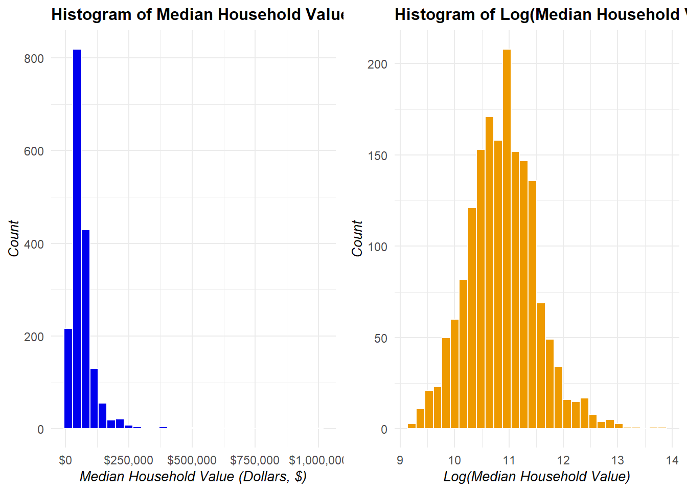
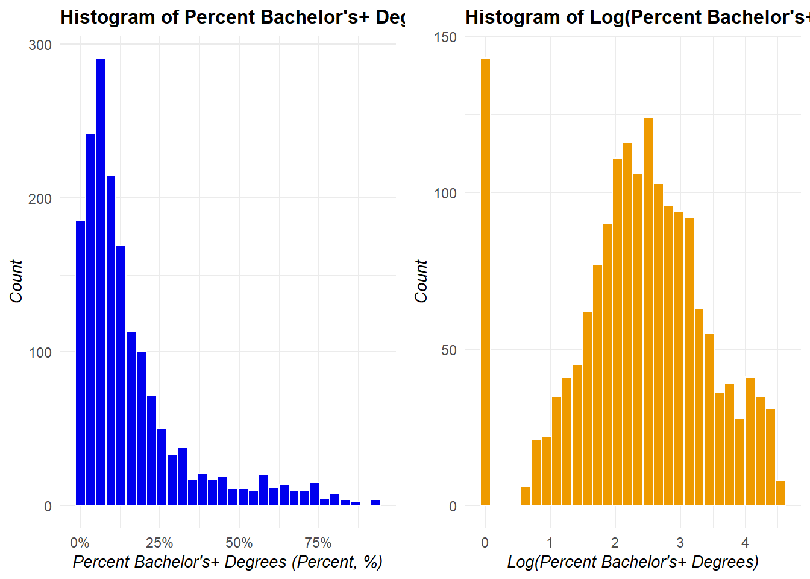
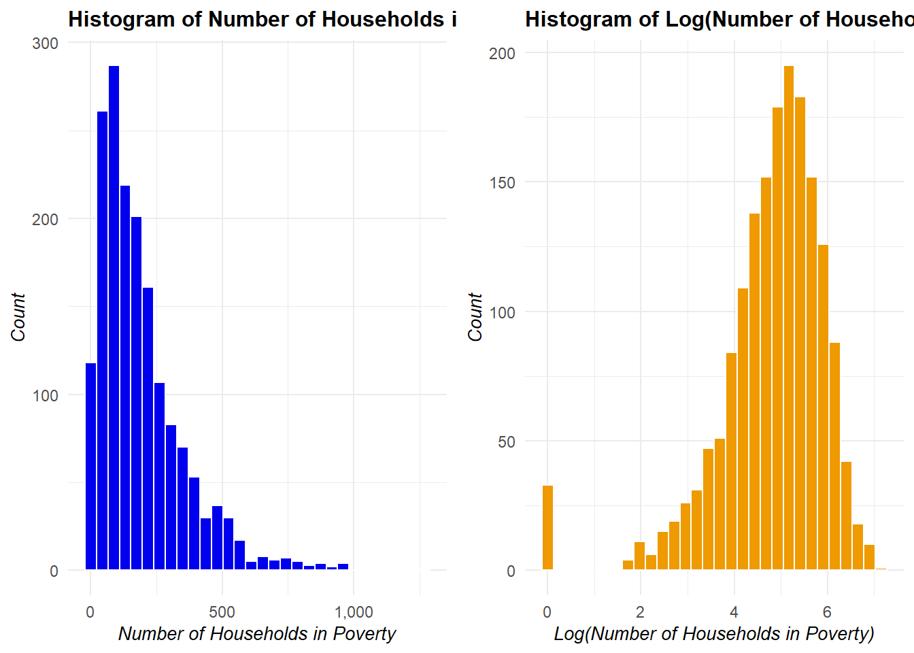
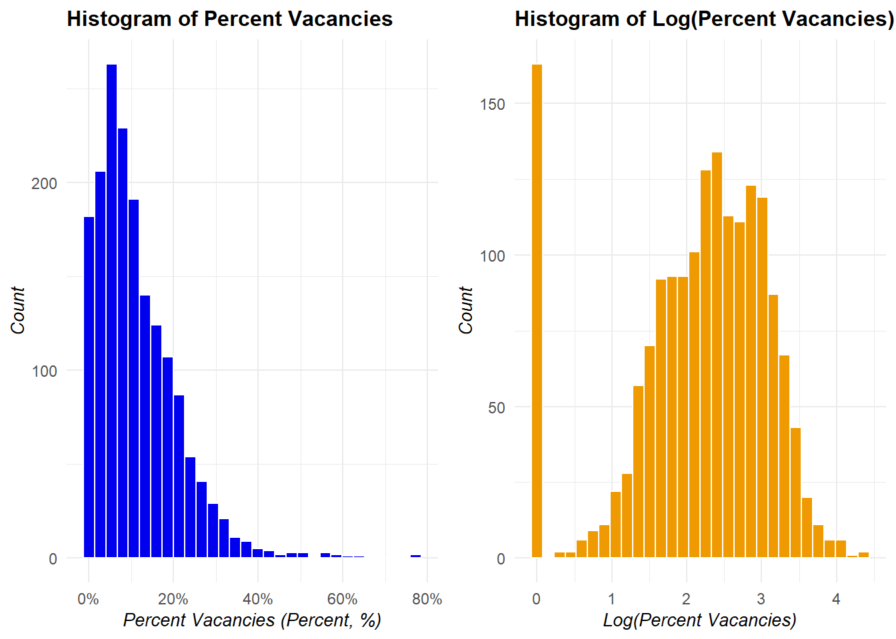
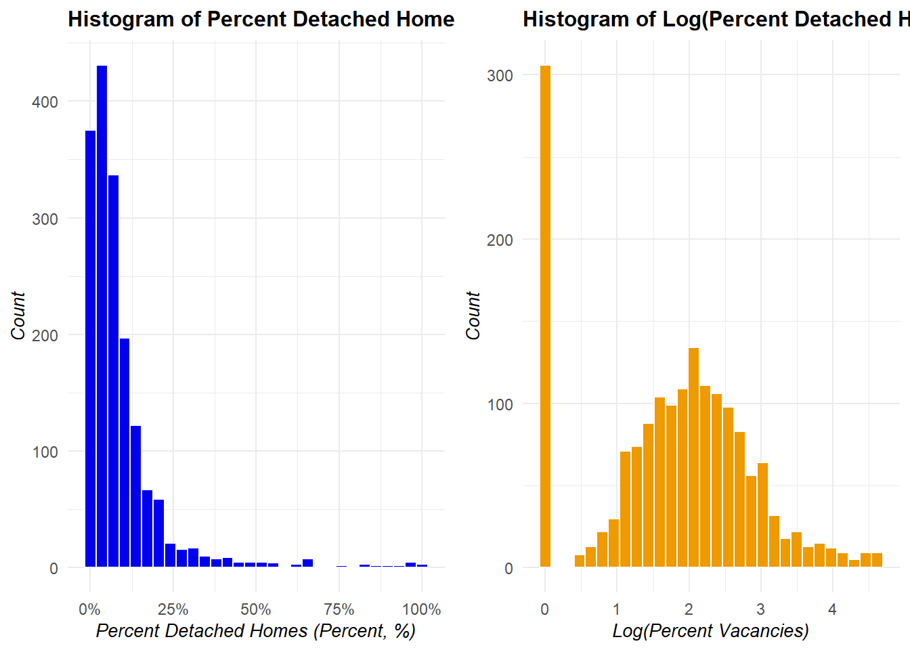
All variables were first graphed to review normality using histograms. None of the original variables appeared to follow a normal distribution, so all logarithmic transformations were applied to assess whether the distributions could be normalized.
Overall, the logarithmic transformation substantially improved normality for the dependent variable (MEDHVAL), resulting in a roughly symmetric distribution for LNMEDHVAL. The only predictor that appeared more normally distributed after transformation was NBELPOV100. The other predictors, PCTBACHMOR, PCTVACANT, and PCTSINGLES, were still skewed and showed zero-inflated distributions even after transformation.
An examination of the other regression assumptions will be discussed in the Regression Assumption Checks section below.
Choropleth Maps
Reading layer `RegressionData' from data source
`C:\Users\astauf03\Desktop\render\spatial-statistics\HW1_OLS_Regression\data\RegressionData.shp'
using driver `ESRI Shapefile'
Simple feature collection with 1720 features and 13 fields
Geometry type: POLYGON
Dimension: XY
Bounding box: xmin: 2660605 ymin: 207610.6 xmax: 2750171 ymax: 304858.8
CRS: NA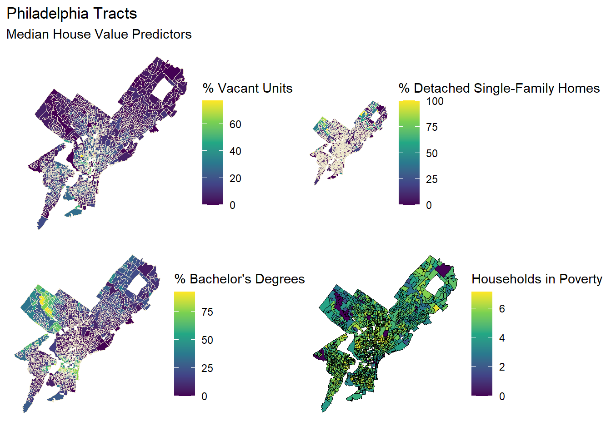
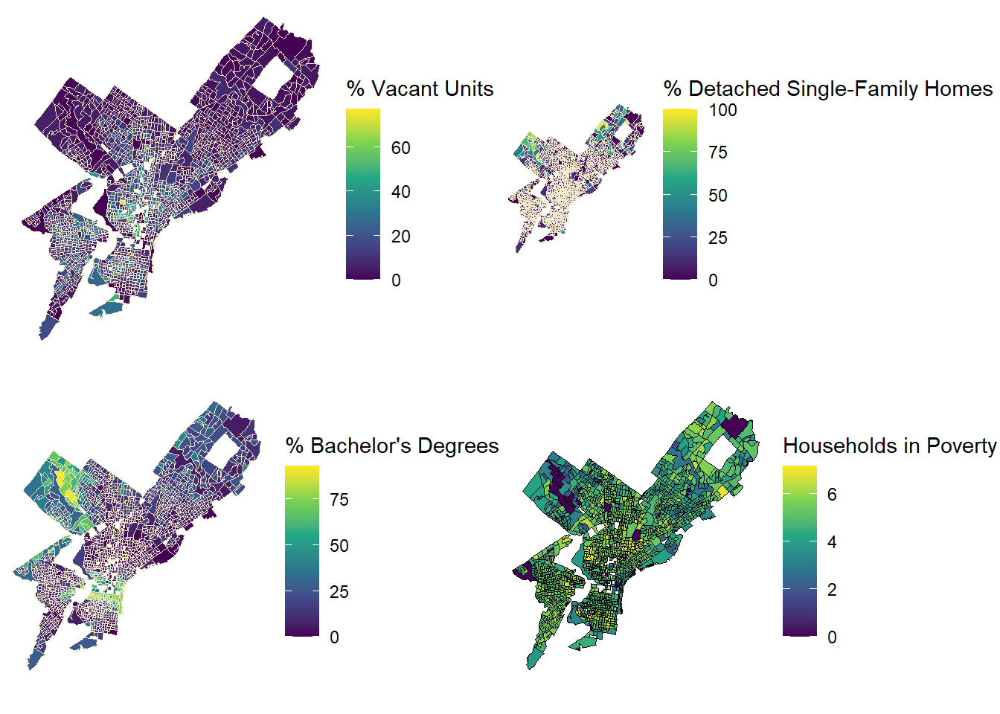
Visually, the maps for median house value, percentage of population with a bachelor’s degree, and percentage of detached homes appear quite similar. There are higher values clustered towards the downtown area and decreasing as you move away from the city center, suggesting a strong positive relationship between income and housing value. Adversely, the percentage of vacant units and households below the poverty line have an inverse relationship. Based on these visual trends, income and education may be correlated with each other as well as with housing value, which raises the possibility of multicollinearity among these predictors.
Correlation Matrix
LNPCTBACHMORE LNNBELPOV100 LNPCTVACANT LNPCTSINGLES
LNPCTBACHMORE 1.00000000 -0.2956891 -0.3586040 0.06331024
LNNBELPOV100 -0.29568910 1.0000000 0.3813548 -0.10431608
LNPCTVACANT -0.35860403 0.3813548 1.0000000 -0.08102890
LNPCTSINGLES 0.06331024 -0.1043161 -0.0810289 1.00000000Warning: `aes_string()` was deprecated in ggplot2 3.0.0.
ℹ Please use tidy evaluation idioms with `aes()`.
ℹ See also `vignette("ggplot2-in-packages")` for more information.
ℹ The deprecated feature was likely used in the ggcorrplot package.
Please report the issue at <https://github.com/kassambara/ggcorrplot/issues>.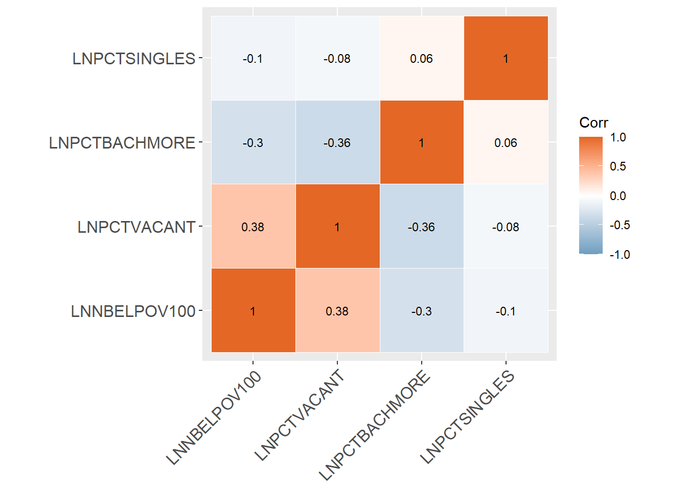
Observations:
The correlation matrix does not show severe multicollinearity, all coefficients within the figure have absolute values of 0.32 or less, indicating that the predictor variables have very minimal correlation with each other. Multicollinearity was considered a possibility when observing the choropleth maps’ spatial patterns and the pockets of inverted blocks between LNNBELPOV100 and predictor variables PCTBACHMOR and PCTSINGLES, but the correlation matrix indicates there is very little correlation among the predictor variables, and a VIF analysis could be conducted as another multicollinearity check.
Regression Results
Call:
lm(formula = LNMEDHVAL ~ PCTVACANT + PCTSINGLES + PCTBACHMOR +
LNNBELPOV100, data = regress_data)
Residuals:
Min 1Q Median 3Q Max
-2.25825 -0.20391 0.03822 0.21744 2.24347
Coefficients:
Estimate Std. Error t value Pr(>|t|)
(Intercept) 11.1137661 0.0465330 238.836 < 0.0000000000000002 ***
PCTVACANT -0.0191569 0.0009779 -19.590 < 0.0000000000000002 ***
PCTSINGLES 0.0029769 0.0007032 4.234 0.0000242 ***
PCTBACHMOR 0.0209098 0.0005432 38.494 < 0.0000000000000002 ***
LNNBELPOV100 -0.0789054 0.0084569 -9.330 < 0.0000000000000002 ***
---
Signif. codes: 0 '***' 0.001 '**' 0.01 '*' 0.05 '.' 0.1 ' ' 1
Residual standard error: 0.3665 on 1715 degrees of freedom
Multiple R-squared: 0.6623, Adjusted R-squared: 0.6615
F-statistic: 840.9 on 4 and 1715 DF, p-value: < 0.00000000000000022The log of median household value (LNMEDHVAL) was regressed on the percent of vacant housing units (PCTVACANT), percent of detached single-family houses (PCTSINGLES), percent of residents with at least a bachelor’s degree (PCTBACHMOR), and the log of number of households in poverty (LNNBELPOV100). Considering the log-transformed median household value response variable (LNMEDHVAL) and poverty predictor variable (LNNBELPOV100), a 0.01 change in their values may be interpreted as a percent change in the original, pre-transformed value.
The regression output indicates that the percent of vacant housing units, percent of detached single-family homes, percent of residents with at least a bachelor’s degree, and number of households in poverty are highly significant and are positively associated with median household value (p < 0.0001 for all variables).
A one percent increase in the percentage of vacancies within the block group is associated with a rounded 𝛽1 = −0.0192 change, an approximately 1.92% decrease in median household value. A one percent increase in the percentage of detached single-family homes within the block group is associated with a rounded 𝛽2 = 0.0030 change, an approximately 0.03% marginal increase in median household value. A one percent increase in the percentage of residents with at least a bachelor’s degree is associated with a 𝛽3 = 0.0209 change, an approximately 2.09% increase in median household value. A one percent increase in the number of those in poverty is associated with a rounded 𝛽4 = −0.0800 change, an approximately 0.08% decrease in median household value. And all given predictor beta coefficient changes are holding other predictors constant.
The p-value of less than 0.0001 for all predictor variables indicates that if there is actually no relationship between the predictor variables and the dependent variable LNMEDHVAL (i.e. if the null hypotheses that 𝛽1 = 𝛽2 = 𝛽3 = 𝛽4 = 0 are actually true), then the probability of getting a 𝛽1 coefficient estimate of –0.0192, a 𝛽2 coefficient estimate of 0.0030, a 𝛽3 coefficient estimate of 0.0209, and a 𝛽4 coefficient estimate of –0.08 are all less than 0.0001. These low probabilities indicate that we can safely reject 𝐻0: 𝛽1 = 𝛽2 = 𝛽3 = 𝛽4 = 0 for 𝐻𝑎: 𝐻𝑎 = 𝑎𝑡 𝑙𝑒𝑎𝑠𝑡 1 𝛽𝑖 ≠ 0 (at most reasonable levels of 𝛼 = 𝑃(𝑇𝑦𝑝𝑒 𝐼 𝑒𝑟𝑟𝑜𝑟)).
66.15% of the variance in the dependent variable is explained by the model (𝑅2 and adjusted 𝑅2 are 0.6623 and 0.6615, respectively). The low p-value less than 0.0001 associated with a large FRatio 840.9 shows that it is safe to reject the null hypothesis that all coefficients in the model are 0.
Regression Assumption Checks
Scatter Plots of Dependent Variable and Predictors
This section discusses testing model assumptions, and variable distributions were analyzed earlier.
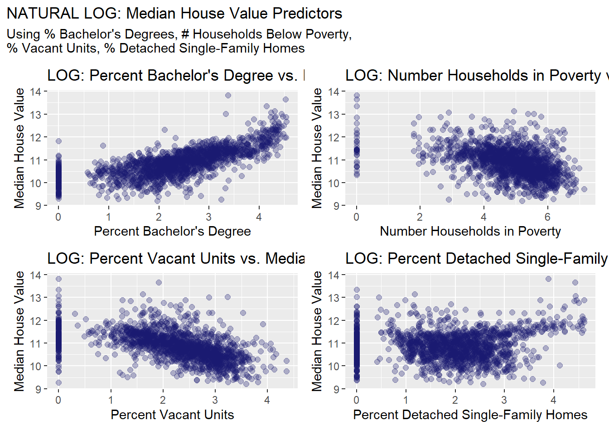
This presents the scatter plots of each of the predictor variables’ relationships with the dependent variable LNMEDHVAL. PCTBACHMOR has an almost concave downward curve that rises again as the percentage of those who hold at least a bachelor’s increases, LNNBELPOV100 is very clustered to one area of the graph between values four to six on the xaxis without any clear linearity, PCTVACANT has a downward sloping curve, and PCTSINGLES has a concentrated form from zero to 25 on the x-axis with several observations aligned horizontally around when y is 11.5 to 12.5. The multivariate regression model assumes relationship linearity; however, it’s clear that none of these predictors are linear.
Histogram of Standardized Residuals
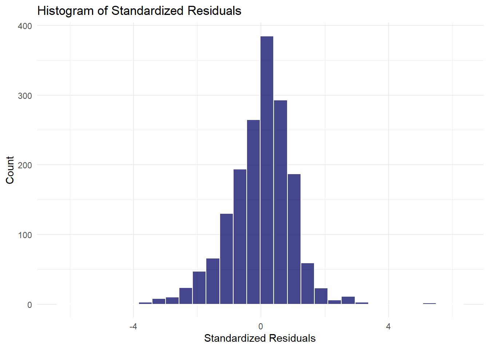
The graph above presents a histogram of the standardized residuals, which have a normal shape in accordance to one of the assumptions in OLS regression.
Standardized Residual by Predicted Value Scatter Plot
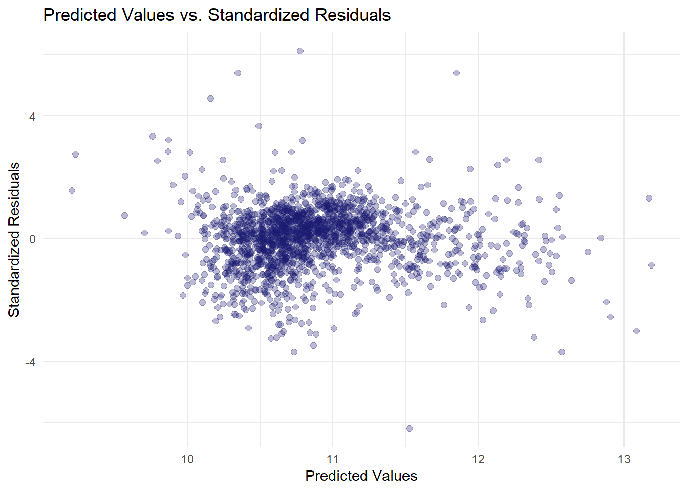
This presents a scatter plot of the standardized residual by the predicted value. Standardized residuals are residuals divided by the standard error, and they are used for comparing residuals of different observations to each other. Visually, the plot is homoscedastic, which is in accordance with one of the assumptions in OLS regression. Another assumption is that there are no vast outliers, and while it seems like there are a few outlier observations, they might not have significant leverage, except for perhaps the observation at the bottom that lies on approximately (11, -6) that deviates the generally constant variance—further analysis in removing outlier points and comparing with the original would be needed to determine if that is the case.
Choropleth Map of Standardized Regression Residuals
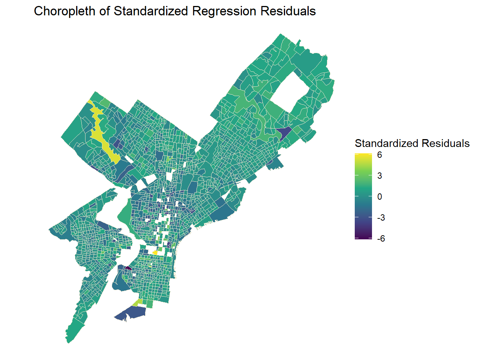
Referencing the maps of the dependent variable and the predictors presented earlier, there seems to be spatial autocorrelation in the variables as it seems that the block group observations are not independent of each other. There are many high-high house value and highhigh percentages of individuals with at least a bachelor’s degree in Center City and in the Wissahickon Valley Park area toward northwest Philadelphia on the east side of the Schuylkill River.
The percentage of detached homes had high-high value clusters in the Wissahickon Valley Park area as well, in addition to the most northeastern part of the county, which is quite in contrast to the low-low values for individuals living in poverty in that same region. Lastly, the percentage of vacancies seemed to have high-high value clusters in North Philadelphia.
Perhaps not as stark as the other maps in the choropleth section, but when observing this one, the most distinct portion of the choropleth map is in the Wissahickon Valley Park region and there are low-low value clusters in North Philadelphia as well as South Philadelphia, so this choropleth map still violates the assumption that the block groups are independent of one another.
Additional Models
Stepwise Regression
Start: AIC=-3448.07
LNMEDHVAL ~ PCTVACANT + PCTSINGLES + PCTBACHMOR + LNNBELPOV100
Df Sum of Sq RSS AIC
<none> 230.34 -3448.1
- PCTSINGLES 1 2.407 232.75 -3432.2
- LNNBELPOV100 1 11.692 242.04 -3364.9
- PCTVACANT 1 51.546 281.89 -3102.7
- PCTBACHMOR 1 199.020 429.36 -2379.0 Step Df Deviance Resid. Df Resid. Dev AIC
1 NA NA 1715 230.3435 -3448.073Cross-Validation
fold 1
Observations in test set: 344
[,1] [,2] [,3] [,4] [,5] [,6]
Predicted 11.557499 11.6828812 10.9620047 11.34662 11.0407941 10.951747
cvpred 11.556902 11.6823824 10.9651308 11.35033 11.0438758 10.951971
LNMEDHVAL 12.672319 12.1291916 11.6055046 12.38506 11.9984333 13.004930
CV residual 1.115417 0.4468092 0.6403739 1.03473 0.9545575 2.052959
[,7] [,8] [,9] [,10] [,11] [,12]
Predicted 10.9365417 11.4224071 11.7159745 11.1322431 11.2878702 11.0014339
cvpred 10.9394338 11.4240965 11.7170639 11.1326079 11.2919880 11.0037815
LNMEDHVAL 11.4008760 12.3238557 11.9183906 11.9652742 11.6784399 11.4031106
CV residual 0.4614421 0.8997592 0.2013267 0.8326663 0.3864519 0.3993291
[,13] [,14] [,15] [,16] [,17] [,18]
Predicted 10.278641 10.333066 10.8045985 11.0355314 10.2723058 10.7137237
cvpred 10.277580 10.335727 10.8079252 11.0364185 10.2735066 10.7153836
LNMEDHVAL 12.323856 10.134599 10.6310362 10.7600283 11.0020998 11.2424282
CV residual 2.046276 -0.201128 -0.1768891 -0.2763902 0.7285932 0.5270446
[,19] [,20] [,21] [,22] [,23] [,24]
Predicted 10.4162208 10.8514124 10.6906174 10.6914759 10.6469488 10.5022005
cvpred 10.4210502 10.8551366 10.6956995 10.6976391 10.6520612 10.5083807
LNMEDHVAL 10.6213273 11.0728689 10.8930287 10.8742665 10.4659564 10.6286178
CV residual 0.2002772 0.2177323 0.1973292 0.1766274 -0.1861048 0.1202371
[,25] [,26] [,27] [,28] [,29] [,30]
Predicted 10.6554315 10.4889888 10.32945158 10.9281180 10.609053 10.3449596
cvpred 10.6549749 10.4934901 10.33331050 10.9308298 10.617973 10.3452670
LNMEDHVAL 10.5400644 10.3189030 10.42821608 10.0690020 9.268609 9.6927665
CV residual -0.1149105 -0.1745871 0.09490558 -0.8618279 -1.349364 -0.6525005
[,31] [,32] [,33] [,34] [,35] [,36]
Predicted 10.8433109 10.8004300 10.802652 10.95604859 11.10165597 10.8509371
cvpred 10.8451230 10.8036235 10.807940 10.95980398 11.10521897 10.8560628
LNMEDHVAL 9.8934372 10.5023241 10.635855 10.99204951 11.19958365 11.0898054
CV residual -0.9516858 -0.3012994 -0.172085 0.03224552 0.09436467 0.2337426
[,37] [,38] [,39] [,40] [,41] [,42]
Predicted 10.7973676 10.5053517 10.79074 10.9131281 10.9032730 10.8399546
cvpred 10.7999508 10.5045736 10.79469 10.9169181 10.9074717 10.8433052
LNMEDHVAL 11.0697585 9.7699562 10.60162 10.7254676 10.6942151 10.7298536
CV residual 0.2698077 -0.7346175 -0.19307 -0.1914505 -0.2132567 -0.1134516
[,43] [,44] [,45] [,46] [,47] [,48]
Predicted 10.59868255 10.6932027 10.8748098 10.751864 10.5061073 10.99170923
cvpred 10.60238346 10.6969971 10.8805356 10.752874 10.5032046 10.99678074
LNMEDHVAL 10.51053203 10.4912742 10.6188853 10.271597 10.2435249 10.93310697
CV residual -0.09185143 -0.2057229 -0.2616503 -0.481277 -0.2596797 -0.06367377
[,49] [,50] [,51] [,52] [,53] [,54]
Predicted 10.8220682 10.8563654 10.2861084 10.7180893 10.71156757 10.4735165
cvpred 10.8247008 10.8635357 10.2875609 10.7201323 10.71416918 10.4774109
LNMEDHVAL 10.5891065 10.5078035 10.4659564 10.3254820 10.64304111 10.6041067
CV residual -0.2355944 -0.3557322 0.1783956 -0.3946503 -0.07112808 0.1266959
[,55] [,56] [,57] [,58] [,59] [,60]
Predicted 10.80225196 10.312243 10.31701013 10.5519285 10.7611344 10.8929092
cvpred 10.80601322 10.316964 10.31920776 10.5569880 10.7615030 10.8940504
LNMEDHVAL 10.81777628 10.465956 10.30226367 10.3513734 11.2910311 11.5655179
CV residual 0.01176306 0.148992 -0.01694409 -0.2056146 0.5295281 0.6714675
[,61] [,62] [,63] [,64] [,65]
Predicted 10.6569235 10.5442831302 10.8832579 10.8900225 10.9543736
cvpred 10.6573656 10.5496716530 10.8857991 10.8943275 10.9585701
LNMEDHVAL 11.0300392 10.5505907946 10.4912742 10.4042628 11.0958937
CV residual 0.3726736 0.0009191416 -0.3945249 -0.4900647 0.1373236
[,66] [,67] [,68] [,69] [,70]
Predicted 10.87654032 10.5227724 10.54317362260 10.7638369 10.7451133
cvpred 10.88107578 10.5262539 10.54541723288 10.7686236 10.7479114
LNMEDHVAL 10.95954023 10.6712783 10.54534143871 10.4544950 10.6016223
CV residual 0.07846445 0.1450244 -0.00007579417 -0.3141287 -0.1462891
[,71] [,72] [,73] [,74] [,75] [,76]
Predicted 10.7899327 10.9143106 10.4641391 10.5334990 10.3151391 10.663214
cvpred 10.7932197 10.9175909 10.4701361 10.5378566 10.3152490 10.667692
LNMEDHVAL 10.4341158 10.5610076 11.1562505 10.9150885 10.4912742 10.292146
CV residual -0.3591039 -0.3565834 0.6861144 0.3772319 0.1760252 -0.375547
[,77] [,78] [,79] [,80] [,81] [,82]
Predicted 10.544543 10.4064869 10.5912646 10.50211258 10.6950362 11.0137682
cvpred 10.547845 10.4091487 10.5938722 10.50562419 10.6970961 11.0172379
LNMEDHVAL 10.134599 10.2327913 10.4222813 10.52137225 10.8874369 11.1243175
CV residual -0.413246 -0.1763574 -0.1715909 0.01574806 0.1903408 0.1070796
[,83] [,84] [,85] [,86] [,87] [,88]
Predicted 10.73132644 10.6386786 10.7213994 10.4896295 10.2682086 10.3991013
cvpred 10.73536020 10.6393349 10.7223262 10.4916578 10.2720822 10.4017646
LNMEDHVAL 10.71885237 10.4370527 10.2750511 10.1924188 10.0816337 10.5347593
CV residual -0.01650784 -0.2022822 -0.4472751 -0.2992389 -0.1904485 0.1329947
[,89] [,90] [,91] [,92] [,93]
Predicted 10.45965531 11.02695643 10.49000975 10.3428578 10.4363214
cvpred 10.46125397 11.03217131 10.49240363 10.3482372 10.4378702
LNMEDHVAL 10.43117029 11.05247605 10.43411580 10.5400644 10.2327913
CV residual -0.03008367 0.02030474 -0.05828783 0.1918272 -0.2050789
[,94] [,95] [,96] [,97] [,98] [,99]
Predicted 10.8633772 10.6856503 10.863091 11.26117 11.0144636 10.8333874
cvpred 10.8663017 10.6912036 10.864700 11.26548 11.0175974 10.8338194
LNMEDHVAL 10.3672216 10.5738777 9.846917 10.78519 11.3169106 11.2797316
CV residual -0.4990801 -0.1173258 -1.017782 -0.48029 0.2993132 0.4459122
[,100] [,101] [,102] [,103] [,104] [,105]
Predicted 11.5753825 11.1123774 10.654186 11.4668888 10.86438015 11.1624145
cvpred 11.5753538 11.1143808 10.660234 11.4681909 10.86809656 11.1654001
LNMEDHVAL 11.1490820 10.9852927 11.895463 11.5740206 10.96301245 10.8855660
CV residual -0.4262718 -0.1290881 1.235229 0.1058297 0.09491589 -0.2798341
[,106] [,107] [,108] [,109] [,110] [,111]
Predicted 11.04553506 11.18341623 11.0695908 11.0246187 10.5656728 9.8173579
cvpred 11.04966783 11.18520828 11.0720669 11.0283160 10.5663055 9.8098450
LNMEDHVAL 10.99373159 11.22123537 10.9059560 11.9524699 11.2567421 10.7144178
CV residual -0.05593624 0.03602709 -0.1661109 0.9241539 0.6904365 0.9045728
[,112] [,113] [,114] [,115] [,116]
Predicted 11.4910807 11.20552385 10.9569907 10.8194527 10.8684668
cvpred 11.4937610 11.21022424 10.9573989 10.8221241 10.8711947
LNMEDHVAL 11.6307085 11.22524339 11.3997568 10.6188853 11.2252434
CV residual 0.1369475 0.01501915 0.4423579 -0.2032387 0.3540487
[,117] [,118] [,119] [,120] [,121]
Predicted 11.761902073 11.0107356 11.406434039 10.6020608 10.8926052
cvpred 11.762666536 11.0084957 11.407386079 10.6029814 10.8939831
LNMEDHVAL 11.760566488 11.7943379 11.405340254 10.3254820 10.7472076
CV residual -0.002100049 0.7858422 -0.002045825 -0.2774994 -0.1467755
[,122] [,123] [,124] [,125] [,126]
Predicted 10.0046380 10.478981576 10.65369200 10.3597697 10.23138684
cvpred 10.0045940 10.477489196 10.66130620 10.3568940 10.23502748
LNMEDHVAL 9.6023825 10.474467099 10.71441777 10.9595402 10.27505111
CV residual -0.4022115 -0.003022097 0.05311157 0.6026462 0.04002363
[,127] [,128] [,129] [,130] [,131] [,132]
Predicted 10.5444102 10.6846286 10.7581065 10.1224567 9.1979316 10.4561092
cvpred 10.5515796 10.6858467 10.7639004 10.1218693 9.1880815 10.4599346
LNMEDHVAL 11.0284171 9.9330464 10.2219413 10.3889954 9.7699562 10.0774409
CV residual 0.4768375 -0.7528004 -0.5419592 0.2671261 0.5818747 -0.3824937
[,133] [,134] [,135] [,136] [,137] [,138]
Predicted 10.6239886 10.7466431 10.6919560 10.7331943 10.89643001 10.2802458
cvpred 10.6256950 10.7501203 10.6943842 10.7350652 10.89846962 10.2806163
LNMEDHVAL 10.1105017 10.9886768 10.5661755 10.5159668 10.82774645 10.1185989
CV residual -0.5151932 0.2385565 -0.1282087 -0.2190984 -0.07072317 -0.1620174
[,139] [,140] [,141] [,142] [,143] [,144]
Predicted 10.3391179 10.3989801 10.3968289 10.2894452 10.242924 10.9441583
cvpred 10.3408074 10.4032002 10.4005966 10.2927167 10.244458 10.9406841
LNMEDHVAL 9.8201059 11.0508900 10.1185989 10.0475879 10.618885 10.3889954
CV residual -0.5207014 0.6476898 -0.2819976 -0.2451288 0.374427 -0.5516888
[,145] [,146] [,147] [,148] [,149] [,150]
Predicted 10.3748412 10.7238105 10.3103560 10.3637927 10.1160378 10.3945992
cvpred 10.3800077 10.7279482 10.3121984 10.3633908 10.1183090 10.3991738
LNMEDHVAL 10.0982316 10.2576594 9.8984750 9.5030100 9.3842937 9.8036672
CV residual -0.2817761 -0.4702888 -0.4137234 -0.8603808 -0.7340154 -0.5955065
[,151] [,152] [,153] [,154] [,155] [,156]
Predicted 10.2793593 11.1379570 10.4295699 10.6476984 10.379324 10.3059957
cvpred 10.2802869 11.1425950 10.4336981 10.6505357 10.380512 10.3101695
LNMEDHVAL 9.6091165 10.3513734 10.1145585 10.0774409 9.961756 10.0212706
CV residual -0.6711704 -0.7912216 -0.3191395 -0.5730948 -0.418755 -0.2888989
[,157] [,158] [,159] [,160] [,161] [,162]
Predicted 10.6075261 10.4386240 10.1354421 10.49037475 10.2002061 10.3568588
cvpred 10.6126259 10.4439005 10.1369321 10.49611305 10.2024369 10.3601286
LNMEDHVAL 9.8146563 9.7291342 9.7526647 10.39818379 9.8036672 9.8416121
CV residual -0.7979696 -0.7147664 -0.3842674 -0.09792925 -0.3987697 -0.5185164
[,163] [,164] [,165] [,166] [,167]
Predicted 10.261490708 10.39036733 10.3826586 10.7610009 10.21423458
cvpred 10.265015030 10.39455289 10.3855532 10.7655691 10.21382912
LNMEDHVAL 10.271596874 10.34496310 10.0816337 10.5991316 10.22918769
CV residual 0.006581844 -0.04958979 -0.3039194 -0.1664375 0.01535857
[,168] [,169] [,170] [,171] [,172] [,173]
Predicted 10.6804076 11.0477850 11.0084180 11.0701132 11.0938349 10.95506340
cvpred 10.6817534 11.0526200 11.0115467 11.0757715 11.0965900 10.96153558
LNMEDHVAL 10.5023241 11.3504065 10.7385682 10.8297286 10.9595402 11.05721914
CV residual -0.1794293 0.2977866 -0.2729785 -0.2460428 -0.1370498 0.09568356
[,174] [,175] [,176] [,177] [,178] [,179]
Predicted 10.9040222 10.9197383 10.55282813 10.7908916 10.50825449 11.0626405
cvpred 10.9092343 10.9213444 10.55429584 10.7964876 10.51012970 11.0683517
LNMEDHVAL 11.0153451 10.8157703 10.46595641 10.5815211 10.42228135 10.7493558
CV residual 0.1061108 -0.1055742 -0.08833943 -0.2149665 -0.08784835 -0.3189958
[,180] [,181] [,182] [,183] [,184] [,185]
Predicted 11.1140106 10.9403301 10.5424828 10.6548130 10.18131350 10.5182887
cvpred 11.1181638 10.9432687 10.5469309 10.6605701 10.18320431 10.5223673
LNMEDHVAL 10.8551454 10.7747809 10.3577428 10.4631033 10.26116200 10.2887500
CV residual -0.2630183 -0.1684878 -0.1891881 -0.1974667 0.07795769 -0.2336173
[,186] [,187] [,188] [,189] [,190] [,191]
Predicted 10.6336545 10.6712565 10.505536 10.5741014 10.3495476 10.5445377
cvpred 10.6424004 10.6742086 10.509669 10.5772220 10.3531326 10.5474292
LNMEDHVAL 10.7557730 10.3254820 10.395130 10.4716382 10.4801009 10.0212706
CV residual 0.1133725 -0.3487266 -0.114539 -0.1055838 0.1269683 -0.5261586
[,192] [,193] [,194] [,195] [,196] [,197]
Predicted 10.6096276 10.539338 10.3640718 10.3734531 10.6129402 10.3339230
cvpred 10.6149734 10.541072 10.3635665 10.3779519 10.6136760 10.3331504
LNMEDHVAL 10.2819240 10.385914 10.1503476 10.2681307 10.0732303 10.1961572
CV residual -0.3330494 -0.155158 -0.2132189 -0.1098213 -0.5404456 -0.1369933
[,198] [,199] [,200] [,201] [,202] [,203]
Predicted 10.8967514 10.5514200 11.3917483 11.11227046 11.5541714 11.1129767
cvpred 10.9036361 10.5514258 11.3939344 11.11470758 11.5557493 11.1141421
LNMEDHVAL 10.4222813 10.3287553 11.2398035 11.20095070 11.3839551 11.0681996
CV residual -0.4813547 -0.2226705 -0.1541309 0.08624312 -0.1717942 -0.0459425
[,204] [,205] [,206] [,207] [,208]
Predicted 11.1084609 11.1870212 11.25561589 11.0926455 11.27021608
cvpred 11.1121648 11.1891979 11.25862587 11.0966135 11.27102883
LNMEDHVAL 11.3034382 11.3702092 11.33976185 11.2502612 11.31080928
CV residual 0.1912734 0.1810113 0.08113597 0.1536476 0.03978045
[,209] [,210] [,211] [,212] [,213]
Predicted 11.71336721 11.51020974 11.1951780 11.2475451 11.87228315
cvpred 11.71314333 11.51206785 11.1991831 11.2509576 11.87171942
LNMEDHVAL 11.76134682 11.60185167 11.7566556 11.7134143 11.95825211
CV residual 0.04820349 0.08978383 0.5574725 0.4624568 0.08653269
[,214] [,215] [,216] [,217] [,218] [,219]
Predicted 12.0504500 14.5206224 11.637756 11.188541 12.3719324 10.9384895
cvpred 12.0476575 14.4997140 11.637459 11.192258 12.3683814 10.9422661
LNMEDHVAL 12.3238557 13.6456708 11.782953 11.456355 12.5974388 11.1243175
CV residual 0.2761982 -0.8540433 0.145494 0.264097 0.2290574 0.1820514
[,220] [,221] [,222] [,223] [,224] [,225]
Predicted 10.6913395 10.48674915 10.428942 10.6524773 11.2786763 10.6009308
cvpred 10.6985897 10.49202568 10.435074 10.6538117 11.2828592 10.6042388
LNMEDHVAL 11.3132543 10.45160896 11.448920 11.0806029 11.1418618 10.7472076
CV residual 0.6146645 -0.04041672 1.013846 0.4267912 -0.1409974 0.1429688
[,226] [,227] [,228] [,229] [,230] [,231]
Predicted 10.5262849 10.5356248 10.7956137 10.9307111 11.3299982 11.0853036
cvpred 10.5285621 10.5385565 10.7973470 10.9313896 11.3303393 11.0863023
LNMEDHVAL 10.6828124 10.1811193 10.6572594 10.5427064 11.4845260 12.0161221
CV residual 0.1542504 -0.3574372 -0.1400876 -0.3886832 0.1541867 0.9298197
[,232] [,233] [,234] [,235] [,236] [,237]
Predicted 11.5419341 11.10665788 11.096292 11.3203966 11.2450702 10.8840743
cvpred 11.5426974 11.11205767 11.098697 11.3226696 11.2494909 10.8884472
LNMEDHVAL 11.8159886 11.09892403 11.061940 11.0219025 11.4360444 11.0477104
CV residual 0.2732913 -0.01313364 -0.036757 -0.3007671 0.1865536 0.1592631
[,238] [,239] [,240] [,241] [,242] [,243]
Predicted 11.229873 11.3130657 11.0902666 11.03274014 11.0022924 11.0950081
cvpred 11.234401 11.3156289 11.0947078 11.03522091 11.0084304 11.1004903
LNMEDHVAL 10.811746 11.1094584 10.9472916 10.96127785 10.6642934 10.6572594
CV residual -0.422655 -0.2061706 -0.1474162 -0.07394306 -0.3441371 -0.4432309
[,244] [,245] [,246] [,247] [,248] [,249]
Predicted 10.954375020 10.8076445 11.271932 11.2298038 11.0565814 11.007472
cvpred 10.957129082 10.8111770 11.271129 11.2309053 11.0605450 11.011806
LNMEDHVAL 10.961277847 11.1927202 11.461632 11.4917018 11.6622072 11.790557
CV residual 0.004148765 0.3815432 0.190503 0.2607966 0.6016621 0.778751
[,250] [,251] [,252] [,253] [,254] [,255]
Predicted 10.8420140 10.7351513 10.9666815 11.2229743 10.6291206 10.6044823
cvpred 10.8471885 10.7385626 10.9721571 11.2258314 10.6378985 10.6082956
LNMEDHVAL 11.0681996 10.9022795 10.7363967 11.0928542 11.0852147 10.8855660
CV residual 0.2210111 0.1637169 -0.2357604 -0.1329772 0.4473162 0.2772704
[,256] [,257] [,258] [,259] [,260] [,261]
Predicted 10.5369954 10.7040131 10.8015432 10.9576551 10.7193964 10.9968910
cvpred 10.5442777 10.7066631 10.8043803 10.9626562 10.7201092 11.0006794
LNMEDHVAL 10.7934343 10.9259385 10.4602421 10.5713169 10.5584135 10.6805162
CV residual 0.2491566 0.2192754 -0.3441382 -0.3913393 -0.1616956 -0.3201632
[,262] [,263] [,264] [,265] [,266]
Predicted 10.4671951 10.98070869 11.1459253 10.68997908 10.9994486
cvpred 10.4674752 10.98532217 11.1484617 10.69354830 11.0017227
LNMEDHVAL 10.9384498 10.91326863 10.5584135 10.75363848 10.8097279
CV residual 0.4709746 -0.07205354 -0.5900482 0.06009018 -0.1919948
[,267] [,268] [,269] [,270] [,271] [,272]
Predicted 10.73476712 10.6660510 11.160426 10.9927518 10.54668284 10.66038709
cvpred 10.73888065 10.6721227 11.164264 10.9958370 10.55317573 10.66523572
LNMEDHVAL 10.71663753 10.2146420 11.020267 10.8551454 10.50780352 10.61643736
CV residual -0.02224312 -0.4574807 -0.143997 -0.1406916 -0.04537221 -0.04879836
[,273] [,274] [,275] [,276] [,277] [,278]
Predicted 10.75325927 10.8118201 10.38385258 10.8894850 10.648102 10.6075336
cvpred 10.75949656 10.8180802 10.38551915 10.8905950 10.653647 10.6083305
LNMEDHVAL 10.71441777 10.4631033 10.41331268 10.6942151 10.547970 10.7684850
CV residual -0.04507879 -0.3549768 0.02779352 -0.1963799 -0.105677 0.1601544
[,279] [,280] [,281] [,282] [,283] [,284]
Predicted 11.33738713 11.755105 10.83887613 11.0808177 11.1017524 10.989528
cvpred 11.34115469 11.755191 10.84264823 11.0828594 11.1056169 10.994317
LNMEDHVAL 11.39639165 11.242428 10.81376021 10.8855660 10.7789563 10.872371
CV residual 0.05523696 -0.512763 -0.02888802 -0.1972934 -0.3266606 -0.121946
[,285] [,286] [,287] [,288] [,289] [,290]
Predicted 11.2744572 10.5510596 10.8698959 10.884065 11.0425267 11.3786448
cvpred 11.2786699 10.5527719 10.8756166 10.888799 11.0459633 11.3797834
LNMEDHVAL 11.0603687 10.7810375 10.7621492 11.189962 10.8589990 11.2515607
CV residual -0.2183011 0.2282655 -0.1134674 0.301163 -0.1869643 -0.1282227
[,291] [,292] [,293] [,294] [,295] [,296]
Predicted 11.617913 10.9891690 11.28808009 11.09980067 11.1170602 10.8981913
cvpred 11.618369 10.9928576 11.29219646 11.10272953 11.1198033 10.9006674
LNMEDHVAL 11.480402 11.6307085 11.27593651 11.03327546 10.9455295 11.0635085
CV residual -0.137967 0.6378509 -0.01625995 -0.06945407 -0.1742738 0.1628411
[,297] [,298] [,299] [,300] [,301] [,302]
Predicted 11.06588167 11.1375649 11.2338426 11.0510136 11.0310009 11.2808593
cvpred 11.06981520 11.1413487 11.2366189 11.0539822 11.0336935 11.2850268
LNMEDHVAL 11.11095425 11.0413206 11.0461167 10.9384498 10.9205282 10.8197783
CV residual 0.04113904 -0.1000282 -0.1905021 -0.1155324 -0.1131653 -0.4652485
[,303] [,304] [,305] [,306] [,307] [,308]
Predicted 11.2410914 10.89717 11.3178944 10.9063441 10.9513558 11.1652392
cvpred 11.2451090 10.90027 11.3203202 10.9131609 10.9552986 11.1684801
LNMEDHVAL 11.0493014 10.61644 11.0728689 10.6139834 11.3083583 11.2935249
CV residual -0.1958076 -0.28383 -0.2474512 -0.2991776 0.3530597 0.1250448
[,309] [,310] [,311] [,312] [,313] [,314]
Predicted 10.65578211 11.171525 11.1462393 10.9344031 11.5804169 11.35239545
cvpred 10.65896749 11.174450 11.1496960 10.9378085 11.5824652 11.35605683
LNMEDHVAL 10.69648007 10.992050 10.9543092 11.0836798 11.4175153 11.42300076
CV residual 0.03751258 -0.182401 -0.1953868 0.1458713 -0.1649499 0.06694392
[,315] [,316] [,317] [,318] [,319] [,320]
Predicted 11.62695769 10.9291626 11.36236391 10.9523195 11.0772153 11.3013998
cvpred 11.62772069 10.9342038 11.36468362 10.9571260 11.0812429 11.3037769
LNMEDHVAL 11.70271904 11.3678997 11.28853113 11.4240943 11.5898865 11.4219061
CV residual 0.07499834 0.4336959 -0.07615249 0.4669682 0.5086436 0.1181291
[,321] [,322] [,323] [,324] [,325] [,326]
Predicted 11.24228292 11.1124948 11.2906315 11.262430 11.3231143 10.8919023
cvpred 11.24479252 11.1163114 11.2922079 11.266727 11.3257974 10.8973129
LNMEDHVAL 11.33618829 11.3805363 11.3930152 11.372513 11.4425030 11.4521133
CV residual 0.09139577 0.2642249 0.1008072 0.105786 0.1167056 0.5548004
[,327] [,328] [,329] [,330] [,331] [,332]
Predicted 11.1662476 11.1375724 11.67534371 10.9600525 11.54548879 11.4233229
cvpred 11.1695015 11.1416368 11.67616466 10.9652333 11.54656390 11.4264825
LNMEDHVAL 11.5991032 11.6733422 11.66220717 11.6163842 11.45529635 11.7068462
CV residual 0.4296017 0.5317054 -0.01395749 0.6511509 -0.09126755 0.2803637
[,333] [,334] [,335] [,336] [,337] [,338]
Predicted 11.2505062 12.0168545 11.4601808 11.3398605 11.5705712 12.2393135
cvpred 11.2538789 12.0158154 11.4629175 11.3426837 11.5711799 12.2367006
LNMEDHVAL 11.5199011 11.6342578 11.7775948 11.7051974 11.3850921 11.8182018
CV residual 0.2660222 -0.3815577 0.3146772 0.3625137 -0.1860878 -0.4184988
[,339] [,340] [,341] [,342] [,343]
Predicted 11.7554352 11.33840374 11.7305420 11.42604313 11.50606801
cvpred 11.7551872 11.34146553 11.7315283 11.42880751 11.50864229
LNMEDHVAL 11.4230008 11.40311060 11.4008760 11.36905509 11.46163217
CV residual -0.3321864 0.06164507 -0.3306524 -0.05975242 -0.04701012
[,344]
Predicted 11.61639487
cvpred 11.61818868
LNMEDHVAL 11.62892914
CV residual 0.01074046
Sum of squares = 56.41 Mean square = 0.16 n = 344
fold 2
Observations in test set: 344
[,1] [,2] [,3] [,4] [,5] [,6]
Predicted 10.994421 10.196846 11.00724499 10.743730 12.1007128 10.810337
cvpred 10.991812 10.205461 11.00794062 10.740953 12.1033245 10.809597
LNMEDHVAL 12.323856 13.017003 10.97335737 12.595747 12.6555546 11.956328
CV residual 1.332044 2.811542 -0.03458325 1.854794 0.5522301 1.146731
[,7] [,8] [,9] [,10] [,11] [,12]
Predicted 11.4740999 10.5271675 10.4340655 10.6123812 10.517157 11.2715251
cvpred 11.4741065 10.5293667 10.4426210 10.6172243 10.522985 11.2746370
LNMEDHVAL 12.4634244 10.7995756 10.7144178 10.8874369 11.584315 11.9984333
CV residual 0.9893179 0.2702089 0.2717968 0.2702127 1.061331 0.7237963
[,13] [,14] [,15] [,16] [,17] [,18]
Predicted 10.4020069 11.3625361 11.0617217 10.6082963 10.3537489 10.6393338
cvpred 10.4103416 11.3630173 11.0644314 10.6122782 10.3621649 10.6430938
LNMEDHVAL 10.7684850 12.1388639 11.4446466 10.2989023 10.1385597 10.1464337
CV residual 0.3581434 0.7758466 0.3802152 -0.3133758 -0.2236052 -0.4966601
[,19] [,20] [,21] [,22] [,23] [,24]
Predicted 10.3354714 10.3963103 10.7217663 10.9764663 10.9417925 10.9412484
cvpred 10.3454060 10.4056593 10.7284120 10.9800475 10.9493912 10.9433211
LNMEDHVAL 10.0345158 10.2750511 10.0345158 11.2541547 11.2064003 11.0603687
CV residual -0.3108902 -0.1306082 -0.6938962 0.2741073 0.2570091 0.1170477
[,25] [,26] [,27] [,28] [,29] [,30]
Predicted 11.4686306 10.7257563 10.5634439 10.5097753 10.52418010 10.6751001
cvpred 11.4715795 10.7304231 10.5651537 10.5201997 10.53094927 10.6765189
LNMEDHVAL 11.4186148 10.8356516 11.0681996 10.3981838 10.61888534 10.8056794
CV residual -0.0529647 0.1052285 0.5030459 -0.1220159 0.08793607 0.1291605
[,31] [,32] [,33] [,34] [,35]
Predicted 10.5830832 10.78347838 10.6365273 10.9249045 11.084537429
cvpred 10.5849531 10.78444039 10.6415184 10.9285328 11.085505985
LNMEDHVAL 10.7077288 10.79753268 10.7684850 11.0603687 11.094375117
CV residual 0.1227756 0.01309229 0.1269666 0.1318359 0.008869132
[,36] [,37] [,38] [,39] [,40] [,41]
Predicted 10.4820092 10.7051809 10.5956544 10.3718419 10.9890025 10.6339459
cvpred 10.4870250 10.7112938 10.5988106 10.3791879 10.9912860 10.6391972
LNMEDHVAL 10.0690020 10.5687495 10.4829060 10.0858091 10.3545632 9.8416121
CV residual -0.4180231 -0.1425443 -0.1159046 -0.2933788 -0.6367228 -0.7975851
[,42] [,43] [,44] [,45] [,46] [,47]
Predicted 10.5890858 10.6796496 10.2422567 11.4818448 11.3865926 10.65452454
cvpred 10.6001507 10.6808911 10.2543726 11.4795631 11.3868464 10.65613179
LNMEDHVAL 9.8469172 10.2327913 10.5213722 11.6386767 11.2437380 10.60410675
CV residual -0.7532335 -0.4480998 0.2669996 0.1591136 -0.1431084 -0.05202504
[,48] [,49] [,50] [,51] [,52] [,53]
Predicted 10.8597488 10.2674539 10.484669 10.4996226 10.889902 10.8483771
cvpred 10.8608242 10.2758550 10.491527 10.5059122 10.891935 10.8521208
LNMEDHVAL 11.1198829 9.9183762 9.942708 10.7121931 11.028417 11.0524760
CV residual 0.2590587 -0.3574788 -0.548819 0.2062809 0.136482 0.2003552
[,54] [,55] [,56] [,57] [,58] [,59]
Predicted 11.0337031 11.06540787 10.9620040 10.419986 10.9714571 11.0254241
cvpred 11.0352511 11.06662357 10.9609488 10.440645 10.9688330 11.0228362
LNMEDHVAL 10.8704714 11.14475614 11.3527567 11.824812 11.3108093 11.3034382
CV residual -0.1647797 0.07813258 0.3918079 1.384168 0.3419763 0.2806021
[,60] [,61] [,62] [,63] [,64]
Predicted 10.651452306 11.07793444 10.41776991 10.396380 10.8629796
cvpred 10.656389816 11.07727548 10.42176516 10.404639 10.8660638
LNMEDHVAL 10.659609532 11.01862914 10.38899537 10.561008 10.5661755
CV residual 0.003219716 -0.05864633 -0.03276979 0.156369 -0.2998883
[,65] [,66] [,67] [,68] [,69]
Predicted 10.590449750 10.7015490 10.58846410 10.9822196 10.7358629
cvpred 10.592842047 10.7016686 10.59199508 10.9850866 10.7389829
LNMEDHVAL 10.584055951 10.1266311 10.62376340 10.4103052 10.4516090
CV residual -0.008786096 -0.5750375 0.03176832 -0.5747815 -0.2873739
[,70] [,71] [,72] [,73] [,74] [,75]
Predicted 10.0915876 10.7150005 10.4817152 10.7801503 10.9562030 10.9774549
cvpred 10.1022122 10.7138265 10.4866705 10.7845398 10.9611632 10.9780595
LNMEDHVAL 10.5050675 10.2819240 10.9818971 11.4710613 11.7174976 10.6572594
CV residual 0.4028554 -0.4319025 0.4952266 0.6865215 0.7563344 -0.3208002
[,76] [,77] [,78] [,79] [,80]
Predicted 10.72062803 10.76360913 10.7953517 10.9219901 10.4937558
cvpred 10.72337737 10.76433094 10.7994882 10.9237631 10.4997874
LNMEDHVAL 10.78725509 10.68966960 10.5347593 10.5713169 10.7705880
CV residual 0.06387772 -0.07466135 -0.2647289 -0.3524462 0.2708007
[,81] [,82] [,83] [,84] [,85] [,86]
Predicted 10.94647218 10.5642353 10.8448008 10.785181 10.545793 10.404114
cvpred 10.94941037 10.5660551 10.8454814 10.784273 10.543748 10.413789
LNMEDHVAL 11.03327546 10.8780472 11.7675677 11.933608 11.959533 10.671278
CV residual 0.08386509 0.3119921 0.9220863 1.149335 1.415785 0.257489
[,87] [,88] [,89] [,90] [,91] [,92]
Predicted 10.5538301 10.312322217 10.7255972 10.8088198 11.1879337 11.1902123
cvpred 10.5548362 10.319047624 10.7281320 10.8158803 11.1854548 11.1905010
LNMEDHVAL 10.2182983 10.315597203 10.6115233 10.6759079 11.4467857 11.2279065
CV residual -0.3365379 -0.003450421 -0.1166087 -0.1399724 0.2613309 0.0374055
[,93] [,94] [,95] [,96] [,97] [,98]
Predicted 10.66785568 10.9355667 10.7436199 10.8088893 10.2421084 10.4171096
cvpred 10.67412190 10.9408963 10.7507933 10.8165649 10.2553765 10.4183758
LNMEDHVAL 10.61643736 10.6358554 10.5078035 10.4429006 10.4222813 10.2819240
CV residual -0.05768454 -0.3050408 -0.2429897 -0.3736643 0.1669048 -0.1364518
[,99] [,100] [,101] [,102] [,103] [,104]
Predicted 10.11868616 10.3463070 10.1772265 10.3241026 10.3462530 10.2066230
cvpred 10.13209857 10.3552514 10.1966718 10.3313347 10.3533438 10.2145164
LNMEDHVAL 10.19241884 10.0562086 10.6406516 10.1425045 9.8521943 9.9987977
CV residual 0.06032028 -0.2990427 0.4439798 -0.1888302 -0.5011495 -0.2157187
[,105] [,106] [,107] [,108] [,109] [,110]
Predicted 10.4352413 10.231665260 10.1231668 10.5375841 10.5288360 10.2753911
cvpred 10.4420176 10.243899981 10.1356901 10.5443462 10.5372057 10.2876203
LNMEDHVAL 10.1023384 10.239959789 9.8730283 9.5956028 9.6091165 10.4716382
CV residual -0.3396792 -0.003940192 -0.2626617 -0.9487434 -0.9280892 0.1840179
[,111] [,112] [,113] [,114] [,115] [,116]
Predicted 10.3814727 10.6991179 10.9010470 10.70956017 12.645063 11.2183619
cvpred 10.3965499 10.7021076 10.9058205 10.71127287 12.643561 11.2180483
LNMEDHVAL 10.1773242 10.3951304 10.5713169 10.72766300 11.984802 11.3952674
CV residual -0.2192256 -0.3069772 -0.3345036 0.01639013 -0.658759 0.1772192
[,117] [,118] [,119] [,120] [,121] [,122]
Predicted 11.5421509 11.5253906 11.0446467 10.573529 11.0159810 11.5473658
cvpred 11.5399096 11.5249824 11.0439132 10.583093 11.0176764 11.5490409
LNMEDHVAL 12.0411980 11.3290026 11.4865815 11.630709 11.4584693 11.3952674
CV residual 0.5012884 -0.1959798 0.4426683 1.047616 0.4407929 -0.1537735
[,123] [,124] [,125] [,126] [,127] [,128]
Predicted 10.9506973 9.5907045 11.29616149 10.3587632 11.2378001 11.2770834
cvpred 10.9480593 9.6166375 11.29375519 10.3679972 11.2366081 11.2785366
LNMEDHVAL 11.4108927 9.8416121 11.21586623 11.0821425 11.0635085 11.9860492
CV residual 0.4628334 0.2249746 -0.07788896 0.7141453 -0.1730996 0.7075126
[,129] [,130] [,131] [,132] [,133] [,134]
Predicted 10.69884155 10.9370385 11.014652 11.1952916 10.90947872 10.4039022
cvpred 10.70493335 10.9368961 11.014251 11.1949565 10.91629671 10.4114315
LNMEDHVAL 10.75577295 11.3337988 11.535665 11.3736634 11.01205017 10.2219413
CV residual 0.05083961 0.3969027 0.521414 0.1787069 0.09575347 -0.1894902
[,135] [,136] [,137] [,138] [,139] [,140]
Predicted 10.346483 10.0532523 10.0464409 9.71454117 10.1439382 10.6717374
cvpred 10.351879 10.0711542 10.0645054 9.73596282 10.1541642 10.6798014
LNMEDHVAL 9.878170 10.2921455 9.2965181 9.76995616 10.9150885 11.3144745
CV residual -0.473709 0.2209913 -0.7679873 0.03399334 0.7609242 0.6346731
[,141] [,142] [,143] [,144] [,145] [,146]
Predicted 9.893313 10.309711 10.80199 10.3786157 10.1496875 10.64279975
cvpred 9.912928 10.314476 10.80549 10.3818762 10.1644300 10.64590491
LNMEDHVAL 11.042922 11.461632 11.06351 9.3842937 9.5178251 10.57131693
CV residual 1.129994 1.147156 0.25802 -0.9975825 -0.6466049 -0.07458799
[,147] [,148] [,149] [,150] [,151] [,152]
Predicted 10.58913 10.2052040 10.399424 10.6585572 10.5501402 9.9949126
cvpred 10.60048 10.2173528 10.409557 10.6615475 10.5506383 10.0123158
LNMEDHVAL 11.18303 9.3413686 10.030120 9.9134379 10.1064284 9.5324239
CV residual 0.58255 -0.8759842 -0.379437 -0.7481097 -0.4442099 -0.4798919
[,153] [,154] [,155] [,156] [,157] [,158]
Predicted 10.2697061 10.0001443 10.7599958 10.0713041 10.7413995 11.166326
cvpred 10.2760155 10.0138486 10.7764791 10.0848751 10.7386211 11.165428
LNMEDHVAL 9.7350689 9.2103404 9.9475044 10.6041067 10.4163112 10.030120
CV residual -0.5409466 -0.8035082 -0.8289747 0.5192317 -0.3223099 -1.135308
[,159] [,160] [,161] [,162] [,163] [,164]
Predicted 11.2699232 10.5475603 10.6507494 10.366328 10.4831515 10.4458476
cvpred 11.2674993 10.5530447 10.6534117 10.373022 10.4892483 10.4504114
LNMEDHVAL 10.7144178 10.7768708 9.8883739 10.229188 9.5539301 10.2681307
CV residual -0.5530815 0.2238261 -0.7650378 -0.143834 -0.9353183 -0.1822807
[,165] [,166] [,167] [,168] [,169] [,170]
Predicted 10.0010878 10.5721981 10.1615600 10.8591232 10.31842654 10.50905183
cvpred 10.0156650 10.5763860 10.1714649 10.8606508 10.32591322 10.51323620
LNMEDHVAL 10.2646524 9.7409686 9.8626656 10.5159668 10.27159687 10.50780352
CV residual 0.2489874 -0.8354174 -0.3087994 -0.3446839 -0.05431635 -0.00543268
[,171] [,172] [,173] [,174] [,175] [,176]
Predicted 10.7597271 10.5637576 10.5049396 10.4893693 10.5912981 10.5361304
cvpred 10.7630039 10.5688753 10.5102397 10.4972909 10.5961799 10.5441161
LNMEDHVAL 9.9522777 9.8574436 9.9758082 9.6803440 9.9475044 9.6677652
CV residual -0.8107262 -0.7114317 -0.5344315 -0.8169469 -0.6486754 -0.8763509
[,177] [,178] [,179] [,180] [,181] [,182]
Predicted 10.3476011 10.279387 10.3032182 10.4252661 10.2877036 10.83340581
cvpred 10.3537395 10.286920 10.3101618 10.4323897 10.2973543 10.83723583
LNMEDHVAL 9.9475044 9.680344 9.7350689 10.1064284 9.8984750 10.79957558
CV residual -0.4062351 -0.606576 -0.5750929 -0.3259613 -0.3988793 -0.03766026
[,183] [,184] [,185] [,186] [,187]
Predicted 10.9748786 10.98625527 11.00536850 10.51001742 10.6313420
cvpred 10.9722568 10.98612864 11.00673648 10.51826718 10.6360302
LNMEDHVAL 10.6666271 10.90227951 10.94729160 10.46310334 10.4716382
CV residual -0.3056297 -0.08384913 -0.05944487 -0.05516384 -0.1643919
[,188] [,189] [,190] [,191] [,192]
Predicted 11.1596441 10.82815984 10.919914452 10.4125378 10.7164875
cvpred 11.1584162 10.82912485 10.917816921 10.4210178 10.7193755
LNMEDHVAL 10.8570741 10.79137881 10.927735426 10.0941079 10.5505908
CV residual -0.3013422 -0.03774604 0.009918504 -0.3269098 -0.1687847
[,193] [,194] [,195] [,196] [,197] [,198]
Predicted 10.41890795 10.6206666 10.4066691 10.3470178 10.7443592 10.37581936
cvpred 10.42476800 10.6251767 10.4107579 10.3536605 10.7415828 10.37981991
LNMEDHVAL 10.33201793 10.3734912 9.8626656 9.8883739 10.2363820 10.31559720
CV residual -0.09275007 -0.2516856 -0.5480923 -0.4652866 -0.5052008 -0.06422271
[,199] [,200] [,201] [,202] [,203] [,204]
Predicted 10.5249736 10.6536352 10.7965775 10.4804449 10.5413382 10.4286658
cvpred 10.5253357 10.6558850 10.8008049 10.4816278 10.5445762 10.4366271
LNMEDHVAL 9.9758082 9.9281802 10.1542463 9.5468126 9.8781697 9.9034876
CV residual -0.5495275 -0.7277049 -0.6465586 -0.9348152 -0.6664065 -0.5331395
[,205] [,206] [,207] [,208] [,209] [,210]
Predicted 10.34287234 10.4750772 10.7631066 10.5016317 11.4607492 11.2572300
cvpred 10.34947834 10.4844278 10.7677863 10.5037912 11.4584533 11.2564850
LNMEDHVAL 10.36091240 10.4103052 10.3320179 10.3320179 11.3120325 11.2822536
CV residual 0.01143406 -0.0741226 -0.4357683 -0.1717733 -0.1464208 0.0257687
[,211] [,212] [,213] [,214] [,215] [,216]
Predicted 11.1851468 12.1420218 11.3144868 12.2222465 12.2049098 11.4366140
cvpred 11.1851860 12.1401829 11.3149630 12.2216197 12.2031131 11.4363127
LNMEDHVAL 11.3782506 11.7737501 11.8726956 12.8818193 13.0634623 12.3514708
CV residual 0.1930645 -0.3664328 0.5577326 0.6601996 0.8603492 0.9151582
[,217] [,218] [,219] [,220] [,221] [,222]
Predicted 13.748310 12.5071778 11.552135 11.2370567 10.9670751 10.9758925
cvpred 13.747549 12.5069914 11.553667 11.2397721 10.9673958 10.9765565
LNMEDHVAL 12.876207 11.9754008 11.225243 11.2721270 11.8371805 11.2593227
CV residual -0.871342 -0.5315906 -0.328424 0.0323549 0.8697847 0.2827662
[,223] [,224] [,225] [,226] [,227] [,228]
Predicted 10.7177592 10.8750129 10.3701691 10.6855443 10.686435 10.7887939
cvpred 10.7234190 10.8794496 10.3738007 10.6929149 10.691764 10.7935681
LNMEDHVAL 11.3896272 11.3034382 11.2683029 10.7099634 10.833681 10.5966347
CV residual 0.6662082 0.4239887 0.8945021 0.0170485 0.141917 -0.1969334
[,229] [,230] [,231] [,232] [,233]
Predicted 10.5297013 10.62832241 11.01386949 11.2954732 10.964801994
cvpred 10.5348730 10.63222967 11.01436109 11.2952354 10.968181158
LNMEDHVAL 10.8277465 10.65490364 11.06507464 11.4865815 10.961277847
CV residual 0.2928734 0.02267397 0.05071355 0.1913461 -0.006903311
[,234] [,235] [,236] [,237] [,238] [,239]
Predicted 11.2371193 11.02690017 10.8519934 10.866294 11.0881101 11.380757
cvpred 11.2359108 11.02578756 10.8534138 10.866559 11.0878760 11.379614
LNMEDHVAL 11.1746516 11.06819964 10.8395809 11.327800 11.1968439 11.233212
CV residual -0.0612592 0.04241208 -0.0138329 0.461241 0.1089679 -0.146402
[,240] [,241] [,242] [,243] [,244] [,245]
Predicted 11.1845775 11.3975587 11.4348467 11.68437728 10.9460290 11.2424884
cvpred 11.1842816 11.3965017 11.4325335 11.68334081 10.9470865 11.2400461
LNMEDHVAL 11.4855543 11.5655179 11.1360478 11.75508702 11.0759697 11.1389590
CV residual 0.3012726 0.1690163 -0.2964856 0.07174621 0.1288832 -0.1010871
[,246] [,247] [,248] [,249] [,250] [,251]
Predicted 11.3720435 10.7862505 11.2198395 11.0073445 10.902459 11.1178041
cvpred 11.3714838 10.7902992 11.2173820 11.0070425 10.903296 11.1183679
LNMEDHVAL 11.4731446 11.0219025 11.0120502 10.8077057 11.012050 10.8512770
CV residual 0.1016608 0.2316033 -0.2053318 -0.1993368 0.108754 -0.2670909
[,252] [,253] [,254] [,255] [,256] [,257]
Predicted 10.90329754 10.8910942 10.7408476 11.6420245 11.4695234 11.30165518
cvpred 10.90557733 10.8923904 10.7445213 11.6398502 11.4699910 11.30137504
LNMEDHVAL 10.94199592 11.1316650 11.0852147 11.8415095 11.8026055 11.25285856
CV residual 0.03641859 0.2392746 0.3406935 0.2016594 0.3326145 -0.04851648
[,258] [,259] [,260] [,261] [,262]
Predicted 11.0972020 11.0588202 11.0360828 10.94181999 10.88809084
cvpred 11.0971142 11.0562547 11.0364995 10.94312222 10.88976501
LNMEDHVAL 11.2305626 10.8742665 10.8628378 10.98019501 10.91326863
CV residual 0.1334484 -0.1819882 -0.1736617 0.03707279 0.02350362
[,263] [,264] [,265] [,266] [,267] [,268]
Predicted 10.94484136 11.0942308 11.0377027 10.933357 10.6980221 10.780726
cvpred 10.94745763 11.0952592 11.0398487 10.935270 10.7014171 10.786173
LNMEDHVAL 11.04292184 10.7995756 10.6358554 10.524064 10.8551454 10.929529
CV residual 0.09546421 -0.2956836 -0.4039932 -0.411206 0.1537283 0.143356
[,269] [,270] [,271] [,272] [,273] [,274]
Predicted 10.8678768 11.0218556 10.8360074 10.8982903 11.2561379 10.836679
cvpred 10.8684314 11.0192653 10.8365179 10.8981908 11.2568357 10.840049
LNMEDHVAL 11.0316586 10.6896696 10.6619542 10.5941316 10.9577996 10.635855
CV residual 0.1632273 -0.3295957 -0.1745637 -0.3040592 -0.2990361 -0.204194
[,275] [,276] [,277] [,278] [,279] [,280]
Predicted 11.2524380 11.1120532 11.4355604 10.4029057 11.0062213 10.71968069
cvpred 11.2500023 11.1137882 11.4332476 10.4060019 11.0072286 10.72788336
LNMEDHVAL 10.9114455 10.8036489 10.9560559 10.6286178 10.7210623 10.66662710
CV residual -0.3385569 -0.3101393 -0.4771917 0.2226159 -0.2861663 -0.06125625
[,281] [,282] [,283] [,284] [,285]
Predicted 11.0187123 10.65353762 10.90235710 10.747490408 10.60397722
cvpred 11.0214166 10.65639913 10.90255133 10.750461176 10.60755499
LNMEDHVAL 10.5764320 10.73203937 10.83368119 10.755772954 10.69194491
CV residual -0.4449846 0.07564024 -0.06887014 0.005311779 0.08438992
[,286] [,287] [,288] [,289] [,290] [,291]
Predicted 10.94124142 10.5218752 10.796760 10.7302023 10.56115528 10.47183229
cvpred 10.94407620 10.5276492 10.797638 10.7322677 10.56138962 10.47587003
LNMEDHVAL 10.92593848 10.5132531 11.225243 10.3417425 10.49127422 10.41030515
CV residual -0.01813772 -0.0143961 0.427605 -0.3905253 -0.07011541 -0.06556487
[,292] [,293] [,294] [,295] [,296] [,297]
Predicted 11.2801621 10.8093726 10.2529158 11.07186147 10.80462204 10.81121
cvpred 11.2781594 10.8081022 10.2679331 11.07321005 10.80976499 10.81584
LNMEDHVAL 10.9437643 10.5584135 10.4544950 10.98867682 10.79753268 10.98190
CV residual -0.3343951 -0.2496887 0.1865619 -0.08453323 -0.01223231 0.16606
[,298] [,299] [,300] [,301] [,302] [,303]
Predicted 11.3910182 11.0204936 11.2052219 11.06064000 11.18536633 10.8147239
cvpred 11.3886756 11.0199301 11.2053810 11.06034494 11.18614246 10.8159517
LNMEDHVAL 11.0300392 11.3265959 11.0974100 11.04611673 11.25544923 11.3736634
CV residual -0.3586364 0.3066658 -0.1079709 -0.01422821 0.06930678 0.5577117
[,304] [,305] [,306] [,307] [,308] [,309]
Predicted 11.1755065 11.2602056 10.954580 11.1752045 11.06599610 10.95784496
cvpred 11.1747552 11.2601024 10.954108 11.1760190 11.06552791 10.95708050
LNMEDHVAL 11.3713619 11.4019939 11.164785 11.3144745 11.08827754 11.03488966
CV residual 0.1966067 0.1418915 0.210677 0.1384555 0.02274963 0.07780917
[,310] [,311] [,312] [,313] [,314] [,315]
Predicted 11.3486139 11.26103644 11.0979258 11.3771740 11.0903945 10.8151135
cvpred 11.3480549 11.26111715 11.0953865 11.3774800 11.0888218 10.8180744
LNMEDHVAL 11.0332755 11.18719532 11.2185544 11.0898054 11.0556406 11.0619398
CV residual -0.3147794 -0.07392183 0.1231679 -0.2876745 -0.0331812 0.2438654
[,316] [,317] [,318] [,319] [,320] [,321]
Predicted 11.0920141 11.170568 10.69234720 11.3505645 11.10681878 10.92690398
cvpred 11.0932327 11.170171 10.69735712 11.3521193 11.10540035 10.92817207
LNMEDHVAL 10.9869862 10.941996 10.75577295 11.1690257 11.13750448 11.01369898
CV residual -0.1062465 -0.228175 0.05841583 -0.1830936 0.03210413 0.08552691
[,322] [,323] [,324] [,325] [,326]
Predicted 11.11795194 11.0815505 11.148861881 10.9937962 11.43864107
cvpred 11.11689838 11.0808629 11.149412472 10.9936783 11.43807615
LNMEDHVAL 11.03488966 10.9699209 11.156250521 11.3265959 11.47210347
CV residual -0.08200871 -0.1109419 0.006838049 0.3329176 0.03402732
[,327] [,328] [,329] [,330] [,331]
Predicted 11.1319199 11.32187947 11.5107432 11.2128655 11.4856651
cvpred 11.1309167 11.32119251 11.5095827 11.2123730 11.4833859
LNMEDHVAL 11.3586081 11.38509209 11.3862278 11.5415129 11.3504065
CV residual 0.2276914 0.06389958 -0.1233549 0.3291399 -0.1329794
[,332] [,333] [,334] [,335] [,336] [,337]
Predicted 11.718083506 11.178967 11.2137571 11.101908 11.202403 11.1049943
cvpred 11.719981780 11.178004 11.2131351 11.100907 11.202158 11.1043670
LNMEDHVAL 11.728036845 11.397515 11.3884954 9.588777 11.101945 11.7996070
CV residual 0.008055065 0.219511 0.1753603 -1.512130 -0.100213 0.6952401
[,338] [,339] [,340] [,341] [,342] [,343]
Predicted 11.499897 11.4225882 11.39782660 11.27365573 11.6604087 11.2243631
cvpred 11.497627 11.4202667 11.39693235 11.27330512 11.6586267 11.2243643
LNMEDHVAL 11.909686 11.5926604 11.36210258 11.29849385 11.4053403 11.7890409
CV residual 0.412059 0.1723937 -0.03482978 0.02518873 -0.2532865 0.5646766
[,344]
Predicted 11.7391272
cvpred 11.7370181
LNMEDHVAL 11.9150517
CV residual 0.1780336
Sum of squares = 77.17 Mean square = 0.22 n = 344
fold 3
Observations in test set: 344
[,1] [,2] [,3] [,4] [,5] [,6]
Predicted 11.4022482 10.4827527 10.990103 11.2715650 11.162955 12.6869188
cvpred 11.4139802 10.4711200 11.003097 11.2837675 11.168606 12.7395561
LNMEDHVAL 12.1112124 10.9150885 12.323856 11.7027190 12.703509 12.5886102
CV residual 0.6972321 0.4439685 1.320759 0.4189515 1.534903 -0.1509459
[,7] [,8] [,9] [,10] [,11] [,12]
Predicted 11.7948442 10.9562566 11.172259 11.9401301 11.444572 10.64214978
cvpred 11.8191726 10.9615087 11.182198 11.9671697 11.460167 10.64354901
LNMEDHVAL 12.2060726 11.8817266 12.342350 12.4312142 13.130728 10.61398337
CV residual 0.3869001 0.9202179 1.160152 0.4640445 1.670561 -0.02956564
[,13] [,14] [,15] [,16] [,17] [,18]
Predicted 11.42290796 10.8486794 11.209949 10.9984326 10.7018412 10.7204176
cvpred 11.44933461 10.8556347 11.219539 11.0054062 10.7098765 10.7234348
LNMEDHVAL 11.39863632 11.3265959 12.225385 11.7629057 10.2611620 10.0816337
CV residual -0.05069829 0.4709612 1.005846 0.7574995 -0.4487145 -0.6418011
[,19] [,20] [,21] [,22] [,23] [,24]
Predicted 10.3848506 10.630089 11.000769088 11.33224442 10.7826669 10.8556760
cvpred 10.3861347 10.636776 11.005887157 11.34219760 10.7822614 10.8597123
LNMEDHVAL 9.9942419 10.407289 11.002099841 11.40978471 10.8836916 11.1243175
CV residual -0.3918928 -0.229487 -0.003787316 0.06758711 0.1014302 0.2646052
[,25] [,26] [,27] [,28] [,29]
Predicted 10.17817159 10.316216172 10.1541699 10.44984366 10.7587854
cvpred 10.18176408 10.319975303 10.1557993 10.44926018 10.7576649
LNMEDHVAL 10.11455852 10.328755288 9.8146563 10.53209621 10.1542463
CV residual -0.06720556 0.008779985 -0.3411429 0.08283603 -0.6034186
[,30] [,31] [,32] [,33] [,34] [,35]
Predicted 10.519694 11.3120518 10.9897819 11.0686628 10.9323584 11.87340442
cvpred 10.529140 11.3226777 10.9944651 11.0756089 10.9341947 11.89710870
LNMEDHVAL 9.510445 10.8911683 10.6139834 10.9259385 11.3702092 11.83137920
CV residual -1.018695 -0.4315094 -0.3804818 -0.1496704 0.4360144 -0.06572951
[,36] [,37] [,38] [,39] [,40] [,41]
Predicted 10.7498027 10.8712810 10.86937714 11.1150898 11.0517795 11.343305
cvpred 10.7527425 10.8734537 10.86986001 11.1214792 11.0596758 11.355710
LNMEDHVAL 10.9954109 11.1447561 10.90043619 11.0054276 11.6036798 11.227907
CV residual 0.2426684 0.2713025 0.03057618 -0.1160516 0.5440041 -0.127803
[,42] [,43] [,44] [,45] [,46] [,47]
Predicted 10.7189186 11.00144810 10.71469866 11.1795088 11.0390972 10.7533107
cvpred 10.7132869 11.00581887 10.71601238 11.1877708 11.0441862 10.7597969
LNMEDHVAL 11.1287325 10.98867682 10.76214917 11.4731446 10.8257604 10.5505908
CV residual 0.4154456 -0.01714205 0.04613679 0.2853738 -0.2184259 -0.2092061
[,48] [,49] [,50] [,51] [,52] [,53]
Predicted 10.8171554 10.6918457 10.7283872 10.6254168 10.6785381 10.7747380
cvpred 10.8201814 10.6944711 10.7306215 10.6294717 10.6843394 10.7824150
LNMEDHVAL 10.7121931 10.5584135 10.3920676 10.5159668 10.3056138 10.4573727
CV residual -0.1079884 -0.1360576 -0.3385539 -0.1135049 -0.3787256 -0.3250423
[,54] [,55] [,56] [,57] [,58] [,59]
Predicted 10.51934099 10.8940514 10.3818022 10.65992364 10.5227402 10.8585064
cvpred 10.52400851 10.8977673 10.3856934 10.66259650 10.5251399 10.8564217
LNMEDHVAL 10.49404814 10.5789798 10.6016223 10.72985358 10.2146420 11.7852401
CV residual -0.02996037 -0.3187875 0.2159289 0.06725707 -0.3104979 0.9288184
[,60] [,61] [,62] [,63] [,64] [,65]
Predicted 11.2920261 10.8332223 10.7629067 11.4333984 10.5212148 10.43874890
cvpred 11.3097796 10.8374197 10.7634483 11.4459219 10.5306856 10.43996166
LNMEDHVAL 11.6154821 11.3468709 10.5023241 11.1718426 10.6596095 10.51053203
CV residual 0.3057024 0.5094512 -0.2611243 -0.2740793 0.1289239 0.07057037
[,66] [,67] [,68] [,69] [,70] [,71]
Predicted 10.8403640 10.514544 10.8144142 10.5394694 10.6668612 10.7194038
cvpred 10.8473767 10.516675 10.8200491 10.5423958 10.6704490 10.7196000
LNMEDHVAL 10.6873891 10.218298 10.5453414 10.0816337 10.5427064 11.5805841
CV residual -0.1599876 -0.298377 -0.2747077 -0.4607621 -0.1277426 0.8609841
[,72] [,73] [,74] [,75] [,76] [,77]
Predicted 9.766889 10.8184923 10.7901981 11.0025788 10.4903477 10.569437
cvpred 9.765260 10.8213705 10.7973164 11.0085621 10.4910577 10.574482
LNMEDHVAL 11.044521 11.7440372 10.5661755 11.2384886 10.8454460 10.725468
CV residual 1.279261 0.9226667 -0.2311409 0.2299265 0.3543883 0.150986
[,78] [,79] [,80] [,81] [,82] [,83]
Predicted 10.5379191 10.51130437 10.502308 10.5290889 11.0622324 11.3047085
cvpred 10.5413765 10.51086596 10.504720 10.5334034 11.0692202 11.3175808
LNMEDHVAL 10.3449631 10.46024211 10.243525 10.3640720 11.1788504 11.1476421
CV residual -0.1964134 -0.05062385 -0.261195 -0.1693314 0.1096301 -0.1699386
[,84] [,85] [,86] [,87] [,88]
Predicted 12.6264544 10.792254827 10.9883092 10.63108700 10.6139549
cvpred 12.6709466 10.795123428 10.9934460 10.63533238 10.6117068
LNMEDHVAL 12.1756134 10.789319077 11.1718426 10.72546760 10.2072890
CV residual -0.4953332 -0.005804351 0.1783966 0.09013523 -0.4044178
[,89] [,90] [,91] [,92] [,93] [,94]
Predicted 10.4818386 10.654784 10.5446586 10.29757686 10.4542165 10.4158706
cvpred 10.4814266 10.652275 10.5409288 10.29577636 10.4483884 10.4126270
LNMEDHVAL 10.9022795 10.214642 10.3889954 10.39206757 11.0235351 10.2109723
CV residual 0.4208529 -0.437633 -0.1519335 0.09629121 0.5751467 -0.2016547
[,95] [,96] [,97] [,98] [,99] [,100]
Predicted 10.7978296 10.8543625 10.906916 10.4831219 10.8079365 11.2727955
cvpred 10.7991595 10.8546044 10.916514 10.4891150 10.8111972 11.2846317
LNMEDHVAL 10.5213722 10.5294260 10.578980 10.3609124 11.0186291 11.1004357
CV residual -0.2777873 -0.3251784 -0.337534 -0.1282026 0.2074319 -0.1841959
[,101] [,102] [,103] [,104] [,105] [,106]
Predicted 10.4814923 12.1956586 11.102649 10.9070291 10.625177 10.1745820
cvpred 10.4815604 12.2340430 11.106768 10.9134328 10.619205 10.1832599
LNMEDHVAL 10.0604913 12.1281111 13.345507 11.1272630 11.630709 10.2989023
CV residual -0.4210691 -0.1059319 2.238739 0.2138302 1.011503 0.1156424
[,107] [,108] [,109] [,110] [,111] [,112]
Predicted 11.00229236 10.6053772 11.024908 11.7973133 10.3148386 11.0111010
cvpred 11.00386132 10.6125187 11.034402 11.8190841 10.3166588 11.0182755
LNMEDHVAL 10.92952915 11.2897819 12.210563 11.4845260 10.0774409 10.2072890
CV residual -0.07433217 0.6772632 1.176161 -0.3345581 -0.2392179 -0.8109865
[,113] [,114] [,115] [,116] [,117] [,118]
Predicted 10.24011961 9.89706296 10.3311842 10.2156990 10.2547274 9.6991473
cvpred 10.24521830 9.89726054 10.3382563 10.2173181 10.2516879 9.7021238
LNMEDHVAL 10.17351469 9.88328485 10.1425045 9.7526647 9.7925560 9.9617565
CV residual -0.07170361 -0.01397569 -0.1957518 -0.4646534 -0.4591319 0.2596327
[,119] [,120] [,121] [,122] [,123] [,124]
Predicted 10.8868438 10.3348631 11.2331194 10.60835579 10.8460248 10.6126591
cvpred 10.8854791 10.3365146 11.2428107 10.60615747 10.8607660 10.6144718
LNMEDHVAL 11.2708539 11.2476570 10.3889954 10.69194491 10.9835964 10.3254820
CV residual 0.3853748 0.9111424 -0.8538153 0.08578744 0.1228303 -0.2889899
[,125] [,126] [,127] [,128] [,129] [,130]
Predicted 9.565287 10.1774902 10.1645372 10.4925946 10.4250813 10.2890793
cvpred 9.572049 10.1808727 10.1670792 10.4967591 10.4201068 10.2852127
LNMEDHVAL 10.388995 10.5635949 10.5815211 9.7350689 10.0078476 9.4173545
CV residual 0.816946 0.3827221 0.4144419 -0.7616902 -0.4122592 -0.8678582
[,131] [,132] [,133] [,134] [,135] [,136]
Predicted 10.1879537 10.7434147 10.43375537 10.13520206 10.5658135 10.9482064
cvpred 10.1911849 10.7384054 10.44644084 10.13125682 10.5687790 10.9577911
LNMEDHVAL 10.6572594 10.3766113 10.37972173 10.04324949 10.1385597 10.8723707
CV residual 0.4660744 -0.3617941 -0.06671911 -0.08800732 -0.4302193 -0.0854204
[,137] [,138] [,139] [,140] [,141] [,142]
Predicted 10.9972296 11.1534912 10.8794202 10.70075290 10.424186 10.3128717
cvpred 11.0080849 11.1646586 10.8861563 10.70765264 10.434046 10.3166942
LNMEDHVAL 10.9059560 10.8117461 10.6642934 10.80161431 10.295530 9.4649826
CV residual -0.1021289 -0.3529124 -0.2218629 0.09396167 -0.138516 -0.8517116
[,143] [,144] [,145] [,146] [,147] [,148]
Predicted 10.7713952 10.6101562 10.40516509 10.9195584 10.495933 10.2966092
cvpred 10.7670969 10.6087570 10.39977502 10.9260213 10.494544 10.2979271
LNMEDHVAL 9.7699562 9.8883739 10.32548196 10.7726867 9.846917 10.0475879
CV residual -0.9971408 -0.7203831 -0.07429305 -0.1533346 -0.647627 -0.2503392
[,149] [,150] [,151] [,152] [,153] [,154]
Predicted 10.3239518 11.1910379 10.6297193 10.561483 10.6822730 10.2364866
cvpred 10.3231993 11.1987527 10.6291088 10.561700 10.6825239 10.2354442
LNMEDHVAL 9.6290507 10.5105320 10.0212706 10.102338 10.1023384 10.3889954
CV residual -0.6941486 -0.6882207 -0.6078382 -0.459362 -0.5801854 0.1535512
[,155] [,156] [,157] [,158] [,159] [,160]
Predicted 10.1773716 10.5156367 10.2897393 10.3352074 10.4341689 10.31044250
cvpred 10.1786180 10.5131736 10.2935627 10.3324290 10.4331263 10.30597333
LNMEDHVAL 9.8036672 9.7111157 9.4572004 10.2182983 10.2035921 10.36407196
CV residual -0.3749508 -0.8020579 -0.8363622 -0.1141307 -0.2295341 0.05809863
[,161] [,162] [,163] [,164] [,165]
Predicted 10.40439746 10.7859627 11.2318901 11.3092806 10.856985058
cvpred 10.40739460 10.7820346 11.2417057 11.3186503 10.863172198
LNMEDHVAL 10.34174248 9.9330464 11.0445206 10.3889954 10.864751650
CV residual -0.06565211 -0.8489883 -0.1971852 -0.9296549 0.001579452
[,166] [,167] [,168] [,169] [,170] [,171]
Predicted 11.1529014 10.7900362 10.39934542 10.6308256 10.62240058 10.8700985
cvpred 11.1596258 10.7910927 10.39796234 10.6322700 10.62554972 10.8722091
LNMEDHVAL 10.8493371 10.6805162 10.47728798 10.4940481 10.67590791 10.6851034
CV residual -0.3102887 -0.1105765 0.07932563 -0.1382219 0.05035819 -0.1871058
[,172] [,173] [,174] [,175] [,176] [,177]
Predicted 10.5507828 10.3551782 10.5633036 10.7532383 10.5395675 10.623609
cvpred 10.5592899 10.3540218 10.5557603 10.7484787 10.5372365 10.627012
LNMEDHVAL 10.2219413 10.1266311 9.8309169 10.2989023 10.4133127 10.354563
CV residual -0.3373486 -0.2273907 -0.7248435 -0.4495763 -0.1239239 -0.272449
[,178] [,179] [,180] [,181] [,182] [,183]
Predicted 10.5174459 10.4692957 11.0755110 10.3494401 10.4940747 10.7667400
cvpred 10.5132723 10.4643626 11.0867305 10.3520092 10.4992535 10.7708406
LNMEDHVAL 9.9804486 10.0941079 10.6619542 9.9987977 9.8626656 10.5050675
CV residual -0.5328237 -0.3702547 -0.4247763 -0.3532115 -0.6365879 -0.2657731
[,184] [,185] [,186] [,187] [,188] [,189]
Predicted 10.6227098 10.5439555 10.4950961 10.3598426 12.6410326 11.1905837
cvpred 10.6251390 10.5546933 10.4966649 10.3578070 12.6842426 11.2044175
LNMEDHVAL 10.4042628 10.3672216 10.2470773 10.5213722 12.1399328 11.0958937
CV residual -0.2208761 -0.1874717 -0.2495876 0.1635652 -0.5443098 -0.1085238
[,190] [,191] [,192] [,193] [,194] [,195]
Predicted 11.2773866 11.209720 11.5633186 11.1237995 11.2225099 11.0841995
cvpred 11.2888701 11.219435 11.5811310 11.1337771 11.2364710 11.0943619
LNMEDHVAL 11.1109542 11.377106 11.4616322 11.3034382 11.3445068 11.2528586
CV residual -0.1779159 0.157671 -0.1194988 0.1696612 0.1080358 0.1584967
[,196] [,197] [,198] [,199] [,200] [,201]
Predicted 10.9975913 11.4952678 11.26121430 11.20660776 11.0458342 11.3324501
cvpred 11.0049950 11.5160722 11.27353529 11.22176397 11.0518177 11.3453799
LNMEDHVAL 11.2145194 11.3009691 11.22123537 11.19821472 11.5317472 11.6835118
CV residual 0.2095244 -0.2151031 -0.05229992 -0.02354925 0.4799295 0.3381318
[,202] [,203] [,204] [,205] [,206] [,207]
Predicted 14.6284485 12.80869165 11.5106215 11.9716410 12.9322398 11.1123015
cvpred 14.7221596 12.86067570 11.5266871 11.9997010 12.9856804 11.1246506
LNMEDHVAL 13.8155116 12.76568843 11.8988679 12.3131317 12.5954084 11.3805363
CV residual -0.9066481 -0.09498727 0.3721808 0.3134308 -0.3902721 0.2558856
[,208] [,209] [,210] [,211] [,212] [,213]
Predicted 11.55179452 11.6755797 12.5729179 11.37781 10.8584978 10.9622819
cvpred 11.56856483 11.6952810 12.6143971 11.39473 10.8650716 10.9731512
LNMEDHVAL 11.61908566 11.8699004 11.9879166 11.80560 11.2450460 10.5661755
CV residual 0.05052083 0.1746194 -0.6264805 0.41087 0.3799744 -0.4069757
[,214] [,215] [,216] [,217] [,218] [,219]
Predicted 10.820418018 11.0406743 10.5039068 10.5968835 12.551465 10.43398984
cvpred 10.827015478 11.0469749 10.5049629 10.6017634 12.592400 10.44076705
LNMEDHVAL 10.817776282 10.8434948 10.3889954 10.0033329 11.242428 10.36722157
CV residual -0.009239196 -0.2034801 -0.1159675 -0.5984306 -1.349971 -0.07354548
[,220] [,221] [,222] [,223] [,224]
Predicted 11.0453482 10.3240064 11.1605293 10.9340739 10.7825932988
cvpred 11.0553150 10.3221171 11.1675567 10.9439041 10.7899779816
LNMEDHVAL 11.3349943 10.8551454 10.9041194 10.7514994 10.7893190769
CV residual 0.2796792 0.5330284 -0.2634373 -0.1924046 -0.0006589047
[,225] [,226] [,227] [,228] [,229] [,230]
Predicted 11.1669609 11.67742056 11.56403765 11.764694 11.39404297 11.1416888
cvpred 11.1792878 11.69798595 11.58217466 11.785636 11.40780171 11.1518284
LNMEDHVAL 11.0493014 11.66992921 11.51492347 11.930978 11.47210347 11.6457066
CV residual -0.1299864 -0.02805673 -0.06725119 0.145342 0.06430176 0.4938781
[,231] [,232] [,233] [,234] [,235] [,236]
Predicted 12.41848180 11.6407059 11.4797975 11.6809831 11.4774732 11.1292446
cvpred 12.45834956 11.6614210 11.4941111 11.6997979 11.4924043 11.1363929
LNMEDHVAL 12.48218808 11.7729794 11.5463602 11.2305626 11.5038847 11.5109235
CV residual 0.02383852 0.1115584 0.0522491 -0.4692353 0.0114804 0.3745306
[,237] [,238] [,239] [,240] [,241] [,242]
Predicted 11.2440894 11.4639929 11.21660692 11.2857020 11.5610499 10.8510390
cvpred 11.2544796 11.4842901 11.22362170 11.2961352 11.5800654 10.8572045
LNMEDHVAL 11.1169155 11.1360478 11.14186178 11.1094584 11.1576781 10.5840560
CV residual -0.1375641 -0.3482423 -0.08175991 -0.1866768 -0.4223873 -0.2731486
[,243] [,244] [,245] [,246] [,247]
Predicted 11.06711386 11.11266094 11.1648396 11.3849729 10.90641713
cvpred 11.07483674 11.12377502 11.1734197 11.3962660 10.90976797
LNMEDHVAL 11.01862914 11.05879518 11.0413206 10.9577996 10.98698620
CV residual -0.05620759 -0.06497984 -0.1320991 -0.4384664 0.07721824
[,248] [,249] [,250] [,251] [,252]
Predicted 11.3136467 10.914522711 10.5538679 10.57500560 10.98971800
cvpred 11.3231273 10.921113654 10.5619744 10.57276022 10.99608261
LNMEDHVAL 10.9664727 10.915088464 10.9150885 10.53475933 10.96127785
CV residual -0.3566546 -0.006025189 0.3531141 -0.03800089 -0.03480476
[,253] [,254] [,255] [,256] [,257] [,258]
Predicted 10.9001204 10.7607649 10.80118971 10.7993061 10.3434164 10.8753580
cvpred 10.9059681 10.7698719 10.80325740 10.8018371 10.3442211 10.8829541
LNMEDHVAL 10.7493558 10.5687495 10.79753268 10.4072886 10.8395809 10.5635949
CV residual -0.1566122 -0.2011224 -0.00572472 -0.3945485 0.4953598 -0.3193592
[,259] [,260] [,261] [,262] [,263] [,264]
Predicted 9.687306 10.6858659 10.9210086 10.6439269 10.7693276 10.8017642
cvpred 9.695005 10.6833438 10.9256945 10.6409773 10.7715358 10.8028842
LNMEDHVAL 10.714418 10.1619982 10.6310362 10.4163112 10.6358554 10.6501755
CV residual 1.019413 -0.5213456 -0.2946584 -0.2246662 -0.1356803 -0.1527087
[,265] [,266] [,267] [,268] [,269] [,270]
Predicted 10.8662734 10.9122415 11.2500532 10.59422730 10.5235805 11.0266787
cvpred 10.8702797 10.9162072 11.2604366 10.59659136 10.5237646 11.0334020
LNMEDHVAL 10.7054891 11.0413206 11.0728689 10.68510338 11.0169885 10.9004362
CV residual -0.1647905 0.1251134 -0.1875676 0.08851203 0.4932238 -0.1329658
[,271] [,272] [,273] [,274] [,275] [,276]
Predicted 10.8216991 10.4530814 10.5513747 10.8075237 10.7692715 10.706488
cvpred 10.8240436 10.4528621 10.5544018 10.8124724 10.7689835 10.710588
LNMEDHVAL 10.2146420 10.7726867 10.0168162 10.4370527 10.5532052 10.507804
CV residual -0.6094016 0.3198246 -0.5375856 -0.3754197 -0.2157783 -0.202784
[,277] [,278] [,279] [,280] [,281] [,282]
Predicted 10.6905133 10.6139571 11.1752241 11.251637 11.2775432 11.1307310
cvpred 10.6905200 10.6164924 11.1850815 11.260130 11.2879872 11.1417733
LNMEDHVAL 10.5815211 10.5687495 10.8985895 11.456355 11.1287325 11.1169155
CV residual -0.1089989 -0.0477429 -0.2864921 0.196225 -0.1592547 -0.0248578
[,283] [,284] [,285] [,286] [,287] [,288]
Predicted 11.0409362 11.1454510 11.3513397 11.0928923 11.2557575 11.2381470
cvpred 11.0434871 11.1549360 11.3640846 11.1014388 11.2679351 11.2495532
LNMEDHVAL 11.3108093 11.0070874 10.9750712 10.9681983 11.0493014 11.0413206
CV residual 0.2673222 -0.1478486 -0.3890134 -0.1332405 -0.2186337 -0.2082327
[,289] [,290] [,291] [,292] [,293]
Predicted 10.99979203 11.01897240 11.11881941 11.0557276 11.29672702
cvpred 11.00499050 11.02363651 11.12891175 11.0632095 11.30674135
LNMEDHVAL 10.97848998 11.09133097 11.14908203 11.1968439 11.26830288
CV residual -0.02650052 0.06769446 0.02017029 0.1336344 -0.03843847
[,294] [,295] [,296] [,297] [,298] [,299]
Predicted 11.0237826 11.19870108 11.2194920 10.8540938 11.2168517 11.0861182
cvpred 11.0277620 11.20757579 11.2316153 10.8556137 11.2276156 11.0943363
LNMEDHVAL 11.1732481 11.18719532 10.9886768 11.0300392 10.9970873 10.9366720
CV residual 0.1454861 -0.02038046 -0.2429385 0.1744255 -0.2305283 -0.1576643
[,300] [,301] [,302] [,303] [,304] [,305]
Predicted 11.1098906 10.96987376 10.89799926 11.1387316 11.0809437 11.1029724
cvpred 11.1167087 10.97275847 10.90063590 11.1437675 11.0941782 11.1103022
LNMEDHVAL 10.9954109 11.02353512 10.93667204 10.9384498 10.8551454 10.8723707
CV residual -0.1212979 0.05077665 0.03603614 -0.2053177 -0.2390328 -0.2379315
[,306] [,307] [,308] [,309] [,310]
Predicted 11.206405461 10.8687136 11.0127877 10.97730579 11.09332882
cvpred 11.213161018 10.8742882 11.0146233 10.98293529 11.09721105
LNMEDHVAL 11.203679215 11.0821425 10.2541444 11.02353512 11.12136326
CV residual -0.009481803 0.2078544 -0.7604789 0.04059983 0.02415221
[,311] [,312] [,313] [,314] [,315] [,316]
Predicted 11.19418198 11.32956099 11.3013349 11.0630773 10.8886881 11.1353871
cvpred 11.20376546 11.34065451 11.3128250 11.0687714 10.8928165 11.1425649
LNMEDHVAL 11.22390917 11.29725393 11.5028751 11.3713619 11.4616322 11.6064158
CV residual 0.02014371 -0.04340058 0.1900501 0.3025905 0.5688156 0.4638509
[,317] [,318] [,319] [,320] [,321] [,322]
Predicted 11.7433487 11.385004 11.1897467 11.49599241 11.24105444 11.1976129
cvpred 11.7646905 11.397845 11.1981036 11.51383333 11.25083381 11.2068743
LNMEDHVAL 11.4906799 11.618186 11.6877188 11.47001796 11.33020383 11.4414295
CV residual -0.2740106 0.220341 0.4896152 -0.04381537 0.07937002 0.2345552
[,323] [,324] [,325] [,326] [,327] [,328]
Predicted 11.56381998 11.5692160 11.3658613 11.35191266 11.1782571 10.9993460
cvpred 11.58131354 11.5863377 11.3785388 11.36236562 11.1882953 11.0051235
LNMEDHVAL 11.51192496 11.8593480 11.4804023 11.44892013 11.4306302 11.1462002
CV residual -0.06938857 0.2730104 0.1018634 0.08655452 0.2423349 0.1410767
[,329] [,330] [,331] [,332] [,333] [,334]
Predicted 10.9652794 11.108711 11.39553124 11.2779671 11.42034448 11.1624575
cvpred 10.9708609 11.116162 11.40709256 11.2883350 11.43540660 11.1703865
LNMEDHVAL 11.2318879 11.359774 11.32418334 11.4489201 11.51592097 11.8649898
CV residual 0.2610271 0.243612 -0.08290922 0.1605851 0.08051437 0.6946033
[,335] [,336] [,337] [,338] [,339] [,340]
Predicted 11.2976793 11.6634979 11.3590582 11.3402358 11.2088997 11.4727558
cvpred 11.3083857 11.6818684 11.3718182 11.3523077 11.2178997 11.4862795
LNMEDHVAL 11.5307654 11.9537577 11.6262542 11.5502212 11.3884954 11.3759596
CV residual 0.2223797 0.2718893 0.2544359 0.1979135 0.1705957 -0.1103199
[,341] [,342] [,343] [,344]
Predicted 11.50934255 11.5484154 11.4102229 12.25705056
cvpred 11.52379587 11.5666497 11.4253613 12.29050346
LNMEDHVAL 11.50388472 11.3828168 11.2935249 12.31850807
CV residual -0.01991115 -0.1838329 -0.1318364 0.02800461
Sum of squares = 63.1 Mean square = 0.18 n = 344
fold 4
Observations in test set: 344
[,1] [,2] [,3] [,4] [,5] [,6]
Predicted 11.3222615 10.5199693 10.9470610 11.258722 11.079690 10.865160
cvpred 11.3193244 10.5190772 10.9453993 11.255725 11.077932 10.865120
LNMEDHVAL 11.6404388 10.7144178 11.9427579 12.360080 12.462651 11.998433
CV residual 0.3211144 0.1953405 0.9973586 1.104356 1.384719 1.133314
[,7] [,8] [,9] [,10] [,11] [,12]
Predicted 11.062042 11.32581 10.7068520 10.769263 10.7700588 10.2679979
cvpred 11.060087 11.32347 10.7035672 10.767065 10.7666454 10.2653393
LNMEDHVAL 12.149502 12.48370 11.1139393 11.791314 11.3433227 10.9869862
CV residual 1.089416 1.16023 0.4103721 1.024249 0.5766772 0.7216469
[,13] [,14] [,15] [,16] [,17] [,18]
Predicted 10.7521842 10.7550087 10.4961607 10.5663295 10.71580675 11.094104
cvpred 10.7491365 10.7524478 10.4919315 10.5612089 10.71320886 11.092038
LNMEDHVAL 11.1004357 11.6217799 10.7232674 10.8666619 10.78311430 11.332602
CV residual 0.3512992 0.8693321 0.2313359 0.3054529 0.06990544 0.240564
[,19] [,20] [,21] [,22] [,23] [,24]
Predicted 11.0499765 10.3774424 10.9867631 11.3591306 10.9613676 10.88655664
cvpred 11.0484227 10.3720109 10.9826982 11.3564903 10.9597472 10.88503754
LNMEDHVAL 11.2091140 10.8609202 11.4008760 11.0524760 11.1533893 10.95430918
CV residual 0.1606913 0.4889093 0.4181777 -0.3040142 0.1936421 0.06927164
[,25] [,26] [,27] [,28] [,29] [,30]
Predicted 10.6280524 10.46557790 10.9035750 10.7186844 10.0382317 10.3169417
cvpred 10.6262417 10.46293389 10.9012598 10.7166825 10.0343701 10.3154188
LNMEDHVAL 10.7428972 10.37036129 10.2681307 9.8984750 10.9277354 10.6334487
CV residual 0.1166555 -0.09257261 -0.6331292 -0.8182075 0.8933653 0.3180299
[,31] [,32] [,33] [,34] [,35] [,36]
Predicted 10.9104922 11.454768 10.83989397 10.5751724 10.79644515 11.2364011
cvpred 10.9092026 11.451797 10.83834570 10.5727197 10.79459677 11.2353298
LNMEDHVAL 10.4544950 11.336188 10.87993221 10.1961572 10.89302875 10.9595402
CV residual -0.4547076 -0.115609 0.04158651 -0.3765625 0.09843197 -0.2757896
[,37] [,38] [,39] [,40] [,41]
Predicted 10.91592500 10.9192051 10.855281606 11.3321803 11.3652589
cvpred 10.91359007 10.9170842 10.853763957 11.3303155 11.3636033
LNMEDHVAL 10.87615862 10.8016143 10.860920228 11.1858093 11.7174976
CV residual -0.03743145 -0.1154699 0.007156271 -0.1445062 0.3538943
[,42] [,43] [,44] [,45] [,46] [,47]
Predicted 11.0209449 11.17241942 10.9852334 11.2050275 11.0073095 10.9166219
cvpred 11.0199239 11.17024104 10.9835570 11.2026222 11.0050321 10.9139183
LNMEDHVAL 11.7973522 11.15338929 11.3349943 10.6896696 10.7099634 10.4829060
CV residual 0.7774284 -0.01685175 0.3514372 -0.5129526 -0.2950686 -0.4310123
[,48] [,49] [,50] [,51] [,52] [,53]
Predicted 10.4312972 10.7738537 10.9304735 10.5165822 10.89850962 10.64958182
cvpred 10.4267237 10.7710269 10.9281514 10.5147993 10.89646718 10.64679008
LNMEDHVAL 10.7536385 10.5159668 10.5294260 10.4012279 10.81376021 10.68738910
CV residual 0.3269148 -0.2550601 -0.3987254 -0.1135714 -0.08270697 0.04059902
[,54] [,55] [,56] [,57] [,58] [,59]
Predicted 10.7051599 10.8590528 10.48286103 10.58759120 10.9308070 10.4587212
cvpred 10.7003663 10.8535129 10.48253817 10.58622091 10.9277709 10.4551032
LNMEDHVAL 10.5453414 10.6896696 10.44871460 10.66895539 10.4995730 9.8678604
CV residual -0.1550249 -0.1638433 -0.03382356 0.08273448 -0.4281979 -0.5872428
[,60] [,61] [,62] [,63] [,64] [,65]
Predicted 11.1748807 10.7555889 10.71889462 10.61106013 10.9001938 10.4023198
cvpred 11.1719201 10.7530769 10.71526863 10.60645938 10.9000558 10.3972375
LNMEDHVAL 10.6572594 10.5400644 10.62861778 10.63344871 10.3545632 10.6139834
CV residual -0.5146607 -0.2130125 -0.08665085 0.02698933 -0.5454926 0.2167459
[,66] [,67] [,68] [,69] [,70] [,71]
Predicted 10.4856201 10.4929939 10.71316640 10.63497859 10.6504915 10.784252
cvpred 10.4808511 10.4918501 10.70948303 10.63183888 10.6489200 10.782052
LNMEDHVAL 10.2470773 10.9490506 10.80770570 10.56617553 10.4829060 10.645425
CV residual -0.2337738 0.4572005 0.09822268 -0.06566336 -0.1660141 -0.136627
[,72] [,73] [,74] [,75] [,76] [,77]
Predicted 10.8564119 10.863824 10.50297399 10.6275755 10.52128002 10.7583503
cvpred 10.8544493 10.861538 10.49976466 10.6252776 10.51854162 10.7562522
LNMEDHVAL 10.7342204 10.652542 10.51596683 11.1331281 10.61152335 11.3997568
CV residual -0.1202289 -0.208996 0.01620217 0.5078505 0.09298172 0.6435046
[,78] [,79] [,80] [,81] [,82] [,83]
Predicted 10.375918 10.503823 10.7895521 10.7832047 10.557581 10.64411283
cvpred 10.372090 10.503598 10.7897212 10.7828346 10.557362 10.64065005
LNMEDHVAL 11.461632 11.373663 11.3302038 11.5588544 12.221454 10.56617553
CV residual 1.089542 0.870065 0.5404826 0.7760198 1.664092 -0.07447453
[,84] [,85] [,86] [,87] [,88] [,89]
Predicted 10.2032859 10.7821937 10.37450224 10.7285230 10.2459399 10.5139171
cvpred 10.1984150 10.7792629 10.37086283 10.7252299 10.2428579 10.5130253
LNMEDHVAL 10.3889954 10.4829060 10.38899537 10.5479696 10.4193007 10.2921455
CV residual 0.1905803 -0.2963569 0.01813254 -0.1772604 0.1764428 -0.2208797
[,90] [,91] [,92] [,93] [,94] [,95]
Predicted 11.21955781 11.2675302 10.94074072 10.627497 10.7301295 11.0176534
cvpred 11.21761107 11.2663725 10.93786514 10.624011 10.7279959 11.0155787
LNMEDHVAL 11.17605315 11.0332755 10.91144547 10.236382 10.9077892 10.7913788
CV residual -0.04155792 -0.2330971 -0.02641967 -0.387629 0.1797933 -0.2241999
[,96] [,97] [,98] [,99] [,100] [,101]
Predicted 10.48899269 10.2094272 10.2992189 10.347519 10.3623624 10.3209396
cvpred 10.48681428 10.2052197 10.2950514 10.344494 10.3577489 10.3170978
LNMEDHVAL 10.40426284 10.3221979 10.6334487 10.021271 10.0388922 10.5240640
CV residual -0.08255144 0.1169781 0.3383973 -0.323223 -0.3188567 0.2069663
[,102] [,103] [,104] [,105] [,106] [,107]
Predicted 10.38318146 10.5831283 10.8445742 11.13594039 10.5994776 11.0726112
cvpred 10.38267062 10.5800844 10.8421727 11.13416626 10.5980635 11.0702149
LNMEDHVAL 10.45160896 10.7009947 10.7320394 11.09589372 10.9402244 11.1899616
CV residual 0.06893834 0.1209103 -0.1101333 -0.03827254 0.3421609 0.1197467
[,108] [,109] [,110] [,111] [,112] [,113]
Predicted 11.3206104 11.3997402 11.1508947 11.44484 11.38144091 10.780148
cvpred 11.3184790 11.3964262 11.1484536 11.44319 11.37905052 10.780343
LNMEDHVAL 11.1198829 11.1619485 11.0235351 11.95633 11.43927892 11.350407
CV residual -0.1985961 -0.2344777 -0.1249185 0.51314 0.06022841 0.570063
[,114] [,115] [,116] [,117] [,118] [,119]
Predicted 10.3575148 10.7634187 10.9091847 10.6962413 11.229330 11.3714609
cvpred 10.3499039 10.7636604 10.9085472 10.6934577 11.226515 11.3689266
LNMEDHVAL 11.2332116 11.3083583 11.2332116 11.3862278 12.611538 12.1489731
CV residual 0.8833077 0.5446979 0.3246644 0.6927701 1.385023 0.7800465
[,120] [,121] [,122] [,123] [,124] [,125]
Predicted 10.4465340 10.8677592 11.2014704 11.2889674 10.5970419 10.3985541
cvpred 10.4448962 10.8638009 11.1992322 11.2865403 10.5958363 10.3925508
LNMEDHVAL 10.2219413 10.7298536 11.6199845 11.7814247 10.3449631 10.9150885
CV residual -0.2229549 -0.1339473 0.4207524 0.4948844 -0.2508732 0.5225377
[,126] [,127] [,128] [,129] [,130] [,131]
Predicted 10.1240607 9.7651474 10.378955 10.64348980 10.4359098 10.9364701
cvpred 10.1184981 9.7587653 10.376064 10.64307377 10.4344816 10.9343467
LNMEDHVAL 9.5539301 9.5178251 9.769956 10.70996342 10.6572594 11.1633680
CV residual -0.5645681 -0.2409403 -0.606108 0.06688964 0.2227777 0.2290213
[,132] [,133] [,134] [,135] [,136] [,137]
Predicted 10.78579051 11.2572959 10.6117191 11.4948170 11.37564 10.2818938
cvpred 10.78282005 11.2556982 10.6089455 11.4930284 11.37030 10.2791108
LNMEDHVAL 10.79957558 11.0332755 10.2819240 11.2158662 10.48010 9.4649826
CV residual 0.01675552 -0.2224228 -0.3270215 -0.2771622 -0.89020 -0.8141282
[,138] [,139] [,140] [,141] [,142]
Predicted 10.2063331 10.72413345 10.337195912 10.7270000 10.35961371
cvpred 10.2024073 10.71938292 10.333827195 10.7273427 10.35596708
LNMEDHVAL 10.4193007 10.74720759 10.332017934 10.0212706 10.37661131
CV residual 0.2168934 0.02782467 -0.001809262 -0.7060721 0.02064423
[,143] [,144] [,145] [,146] [,147]
Predicted 11.4867356 10.9994120 10.5035930 10.43325535 10.580192090
cvpred 11.4849694 10.9972599 10.5003220 10.42866720 10.578923105
LNMEDHVAL 10.9869862 10.7995756 10.8376182 10.38899537 10.586584397
CV residual -0.4979832 -0.1976844 0.3372962 -0.03967183 0.007661292
[,148] [,149] [,150] [,151] [,152] [,153]
Predicted 10.9955322 10.9841201 10.12375222 10.5801387 10.5627760 10.1649555
cvpred 10.9931509 10.9814991 10.12007456 10.5783119 10.5606821 10.1618666
LNMEDHVAL 10.6596095 10.7954856 10.13459927 10.1658518 9.8626656 9.5609972
CV residual -0.3335414 -0.1860136 0.01452471 -0.4124601 -0.6980165 -0.6008693
[,154] [,155] [,156] [,157] [,158] [,159]
Predicted 10.5772203 10.1990521 10.3279880 10.5892761 9.167831 10.3687287
cvpred 10.5760538 10.1958603 10.3265521 10.5895011 9.156307 10.3674155
LNMEDHVAL 9.7642255 9.5396441 9.6989204 9.6023825 10.221941 10.2435249
CV residual -0.8118283 -0.6562162 -0.6276317 -0.9871186 1.065635 -0.1238906
[,160] [,161] [,162] [,163] [,164] [,165]
Predicted 10.1943256 10.3534299 10.795027 10.1657629 10.4608072 10.533664
cvpred 10.1915667 10.3486904 10.794609 10.1608595 10.4583327 10.530767
LNMEDHVAL 9.9758082 9.5324239 9.510445 9.9330464 9.9475044 9.913438
CV residual -0.2157585 -0.8162665 -1.284164 -0.2278131 -0.5108282 -0.617329
[,166] [,167] [,168] [,169] [,170] [,171]
Predicted 10.3547629 10.8580188 10.6870747 10.5176927 11.074832 10.0334492
cvpred 10.3521410 10.8568552 10.6854142 10.5151754 11.073742 10.0287822
LNMEDHVAL 10.2109723 10.4042628 10.2363820 9.6421228 9.717158 9.6023825
CV residual -0.1411688 -0.4525924 -0.4490322 -0.8730526 -1.356585 -0.4263997
[,172] [,173] [,174] [,175] [,176] [,177]
Predicted 10.4582406 10.4521917 10.2747357 10.38977098 10.4018683 11.0568621
cvpred 10.4558193 10.4490972 10.2723429 10.38659799 10.3993935 11.0543165
LNMEDHVAL 9.9522777 10.2819240 9.9281802 10.34817337 9.7526647 10.6782147
CV residual -0.5035415 -0.1671732 -0.3441627 -0.03842462 -0.6467288 -0.3761017
[,178] [,179] [,180] [,181] [,182] [,183]
Predicted 10.36846025 10.891336 10.88366523 10.80737587 10.8740035 10.8045071
cvpred 10.36710593 10.891222 10.88131015 10.80507896 10.8727101 10.8027584
LNMEDHVAL 10.42228135 9.740969 10.79957558 10.82177629 10.2435249 10.9664727
CV residual 0.05517541 -1.150254 -0.08173457 0.01669732 -0.6291853 0.1637142
[,184] [,185] [,186] [,187] [,188]
Predicted 11.077676228 10.88465104 10.98008719 10.7009732 10.85011014
cvpred 11.076298508 10.88341588 10.97838339 10.6991861 10.85011114
LNMEDHVAL 11.082142549 10.94376426 10.92052819 10.5840560 10.82774645
CV residual 0.005844041 0.06034839 -0.05785521 -0.1151302 -0.02236468
[,189] [,190] [,191] [,192] [,193] [,194]
Predicted 11.1496771 10.7886435 10.754991 10.99179704 10.73884856 10.86180289
cvpred 11.1482173 10.7878085 10.752373 10.99140474 10.73798358 10.86070105
LNMEDHVAL 10.8742665 10.4341158 10.638256 10.89858946 10.79343431 10.84739345
CV residual -0.2739508 -0.3536927 -0.114117 -0.09281527 0.05545073 -0.01330759
[,195] [,196] [,197] [,198] [,199] [,200]
Predicted 10.85200020 10.9971630 10.5630560 10.5008202 10.7417027 10.8558420
cvpred 10.84950443 10.9956633 10.5612676 10.4977123 10.7392310 10.8537615
LNMEDHVAL 10.76214917 10.7099634 10.4163112 10.2576594 10.3385115 10.3089527
CV residual -0.08735525 -0.2856999 -0.1449564 -0.2400529 -0.4007196 -0.5448088
[,201] [,202] [,203] [,204] [,205] [,206]
Predicted 10.7145699 10.6883110 10.5343980 10.558596 10.0018716 10.2588315
cvpred 10.7116659 10.6866002 10.5323587 10.555515 9.9959118 10.2557519
LNMEDHVAL 10.2255711 10.2255711 9.9804486 10.685103 9.7925560 10.4282161
CV residual -0.4860949 -0.4610292 -0.5519101 0.129588 -0.2033558 0.1724641
[,207] [,208] [,209] [,210] [,211] [,212]
Predicted 10.9294020 10.7388314 10.730806 11.048683 11.3640979 11.1068132
cvpred 10.9264197 10.7354239 10.730034 11.045394 11.3613995 11.1053636
LNMEDHVAL 10.1581298 10.0899671 12.251046 11.254155 11.2593227 11.4574128
CV residual -0.7682899 -0.6454568 1.521012 0.208761 -0.1020767 0.3520491
[,213] [,214] [,215] [,216] [,217]
Predicted 11.9171279 11.33407061 11.2647711 11.2026061534 11.2987299
cvpred 11.9141671 11.33272821 11.2630223 11.2016286811 11.2967263
LNMEDHVAL 11.6307085 11.25156070 11.3816772 11.2009506999 11.6342578
CV residual -0.2834586 -0.08116751 0.1186548 -0.0006779811 0.3375314
[,218] [,219] [,220] [,221] [,222] [,223]
Predicted 11.3152038 11.50606801 11.494817 11.385449 13.3762495 11.4290110
cvpred 11.3127888 11.50424817 11.493028 11.382989 13.3686170 11.4263488
LNMEDHVAL 11.5424843 11.47106126 11.723996 12.888664 12.8463463 11.9381932
CV residual 0.2296955 -0.03318691 0.230968 1.505675 -0.5222707 0.5118444
[,224] [,225] [,226] [,227] [,228] [,229]
Predicted 11.0310303 11.249934128 10.6990118 11.0866858 10.6541814 10.7275156
cvpred 11.0255316 11.247516181 10.6955353 11.0837685 10.6511562 10.7256256
LNMEDHVAL 11.3302038 11.250261155 10.8551454 11.6613455 10.9114455 10.5687495
CV residual 0.3046722 0.002744974 0.1596101 0.5775769 0.2602893 -0.1568761
[,230] [,231] [,232] [,233] [,234] [,235]
Predicted 11.0386934 10.8701707 10.64685937 10.59526869 10.507751 10.5799403
cvpred 11.0375563 10.8669102 10.64599446 10.59346055 10.505944 10.5761691
LNMEDHVAL 10.7600283 11.0136990 10.58658440 10.61888534 10.835652 10.8551454
CV residual -0.2775281 0.1467888 -0.05941006 0.02542479 0.329708 0.2789763
[,236] [,237] [,238] [,239] [,240]
Predicted 10.8145950808 10.9444179 10.8575576 10.6905131 10.5817392
cvpred 10.8103331288 10.9429533 10.8556411 10.6879646 10.5785005
LNMEDHVAL 10.8097279486 11.0348897 10.5916222 10.8336812 10.7363967
CV residual -0.0006051803 0.0919364 -0.2640189 0.1457166 0.1578961
[,241] [,242] [,243] [,244] [,245]
Predicted 10.88996539 11.52949580 12.0213465 11.2975068 11.4656518
cvpred 10.88839860 11.52610114 12.0180964 11.2945811 11.4633779
LNMEDHVAL 10.96474405 11.61005218 11.8600550 11.6977439 11.7248058
CV residual 0.07634545 0.08395104 -0.1580414 0.4031628 0.2614279
[,246] [,247] [,248] [,249] [,250] [,251]
Predicted 11.17416474 10.7534147 11.2914227 11.254762 11.3150363 11.35447352
cvpred 11.17276106 10.7511619 11.2894062 11.252667 11.3130134 11.35307449
LNMEDHVAL 11.19958365 11.3702092 11.1476421 11.233212 11.4957793 11.44998567
CV residual 0.02682259 0.6190473 -0.1417641 -0.019455 0.1827659 0.09691118
[,252] [,253] [,254] [,255] [,256] [,257]
Predicted 11.2337674 11.2978317 11.2803094 11.2786763 11.01659843 11.3725239
cvpred 11.2317528 11.2950565 11.2783327 11.2774876 11.01453465 11.3694169
LNMEDHVAL 11.4499857 11.0202671 11.1139393 10.7851868 10.92413830 11.1619485
CV residual 0.2182328 -0.2747894 -0.1643934 -0.4923008 -0.09039635 -0.2074684
[,258] [,259] [,260] [,261] [,262] [,263]
Predicted 11.098282613 10.95786618 11.315398 11.1659464 11.6150515 11.1649699
cvpred 11.097594727 10.95560807 11.312741 11.1640633 11.6129291 11.1640969
LNMEDHVAL 11.100435742 11.02026715 11.724806 11.6036798 11.2463524 10.8609202
CV residual 0.002841015 0.06465907 0.412065 0.4396165 -0.3665768 -0.3031767
[,264] [,265] [,266] [,267] [,268] [,269]
Predicted 10.9595738 10.85485062 10.8322300 10.6701887 10.94976 10.9290030
cvpred 10.9571630 10.85309116 10.8308323 10.6681461 10.94784 10.9268950
LNMEDHVAL 10.8415398 10.83761820 10.9313197 11.0666384 10.63826 10.5347593
CV residual -0.1156232 -0.01547296 0.1004873 0.3984922 -0.30958 -0.3921357
[,270] [,271] [,272] [,273] [,274]
Predicted 10.82105385 10.6407846 10.9349816 10.6265217 10.72042338
cvpred 10.81883288 10.6371976 10.9334565 10.6249510 10.71995679
LNMEDHVAL 10.89488576 10.4857032 10.6139834 10.5050675 10.73856823
CV residual 0.07605288 -0.1514944 -0.3194732 -0.1198835 0.01861144
[,275] [,276] [,277] [,278] [,279]
Predicted 10.754169709351 10.8492892 11.2379724 11.0413096 10.86856478
cvpred 10.751505212415 10.8477713 11.2362255 11.0388841 10.86663560
LNMEDHVAL 10.751499443657 10.6237634 10.9801950 10.8589990 10.81777628
CV residual -0.000005768758 -0.2240079 -0.2560305 -0.1798851 -0.04885932
[,280] [,281] [,282] [,283] [,284]
Predicted 11.9718086 10.63828417 10.40670996 10.759031025 10.65643727
cvpred 11.9686959 10.63582125 10.40401025 10.756517779 10.65351856
LNMEDHVAL 11.4521133 10.60162227 10.38282251 10.766377508 10.57643203
CV residual -0.5165826 -0.03419897 -0.02118774 0.009859728 -0.07708653
[,285] [,286] [,287] [,288] [,289] [,290]
Predicted 10.99229220 11.3966060 10.7495229 11.0391322 11.1313670 10.9629357
cvpred 10.98984490 11.3948370 10.7498031 11.0371434 11.1299745 10.9613067
LNMEDHVAL 10.96127785 11.2252434 10.9277354 10.9767820 11.0004318 11.1830315
CV residual -0.02856705 -0.1695936 0.1779323 -0.0603614 -0.1295428 0.2217248
[,291] [,292] [,293] [,294] [,295] [,296]
Predicted 11.6582502 11.0375227 11.3786338 11.31419246 11.0905644 11.04472841
cvpred 11.6560080 11.0362150 11.3771677 11.31290524 11.0884683 11.04305035
LNMEDHVAL 11.4957793 11.3702092 11.6647878 11.34922937 10.9472916 10.95779958
CV residual -0.1602287 0.3339941 0.2876202 0.03632413 -0.1411767 -0.08525077
[,297] [,298] [,299] [,300] [,301] [,302]
Predicted 11.13588563 11.2625792 10.8618907 11.2207211 11.1078255 11.2701414
cvpred 11.13372223 11.2606385 10.8603317 11.2196933 11.1060151 11.2675008
LNMEDHVAL 11.04132055 11.0136990 10.9277354 11.0381103 10.9733574 11.0219025
CV residual -0.09240167 -0.2469395 0.0674037 -0.1815831 -0.1326578 -0.2455983
[,303] [,304] [,305] [,306] [,307] [,308]
Predicted 11.2425409 11.07313581 11.15012283 11.0484974 11.3023742 11.395773
cvpred 11.2410530 11.07251773 11.14851501 11.0465614 11.3002289 11.392573
LNMEDHVAL 11.0635085 11.08827754 11.04930144 11.2997322 11.1760531 11.219896
CV residual -0.1775446 0.01575981 -0.09921357 0.2531709 -0.1241757 -0.172677
[,309] [,310] [,311] [,312] [,313]
Predicted 11.0695323 11.03323039 10.92304183 10.7590093 10.794055214
cvpred 11.0685986 11.03204785 10.92131058 10.7572422 10.791914097
LNMEDHVAL 10.9384498 10.99541085 10.97164063 11.0397167 10.793434309
CV residual -0.1301488 -0.03663699 0.05033006 0.2824745 0.001520212
[,314] [,315] [,316] [,317] [,318] [,319]
Predicted 11.1407992 10.9749671 11.21391444 10.7484315 11.23148380 11.201385
cvpred 11.1381771 10.9728542 11.21121713 10.7462020 11.22945905 11.199660
LNMEDHVAL 10.9187182 11.2631812 11.12136326 10.9384498 11.18024603 11.501865
CV residual -0.2194589 0.2903271 -0.08985387 0.1922479 -0.04921302 0.302205
[,320] [,321] [,322] [,323] [,324] [,325]
Predicted 11.1241730 11.5935361 11.1089335 11.1457594 11.3496413 11.0167021
cvpred 11.1226849 11.5914734 11.1072233 11.1433878 11.3472374 11.0160138
LNMEDHVAL 11.5199011 11.4626842 11.3445068 11.4637352 11.5559850 11.4700180
CV residual 0.3972162 -0.1287892 0.2372835 0.3203475 0.2087475 0.4540042
[,326] [,327] [,328] [,329] [,330] [,331]
Predicted 10.9257142 11.1579800 12.0848852 11.49255488 11.4373822 10.7014923
cvpred 10.9236086 11.1571264 12.0814587 11.49035944 11.4353931 10.6997092
LNMEDHVAL 11.4403548 11.5385932 12.0376540 11.51592097 11.3748122 10.9784900
CV residual 0.5167462 0.3814668 -0.0438047 0.02556154 -0.0605809 0.2787808
[,332] [,333] [,334] [,335] [,336] [,337]
Predicted 11.4528762 11.2193150 11.4574819 11.1900435 11.2871872 11.0960735
cvpred 11.4504228 11.2173619 11.4550910 11.1873324 11.2853916 11.0947423
LNMEDHVAL 11.3678997 11.6190857 11.3456895 11.4338823 11.3805363 11.5444241
CV residual -0.0825231 0.4017237 -0.1094015 0.2465498 0.0951447 0.4496819
[,338] [,339] [,340] [,341] [,342] [,343]
Predicted 10.9141045 10.9483789 11.3153178 11.53230632 11.8828125 11.28943117
cvpred 10.9128093 10.9470381 11.3118599 11.53041365 11.8795250 11.28708584
LNMEDHVAL 11.4689736 11.4119995 11.4403548 11.57683879 11.6647878 11.35627165
CV residual 0.5561642 0.4649615 0.1284949 0.04642514 -0.2147372 0.06918581
[,344]
Predicted 11.2219867
cvpred 11.2198645
LNMEDHVAL 11.8277362
CV residual 0.6078717
Sum of squares = 63.64 Mean square = 0.18 n = 344
fold 5
Observations in test set: 344
[,1] [,2] [,3] [,4] [,5] [,6]
Predicted 11.21492 10.446765 11.178997 10.9294588 11.054480 11.03020
cvpred 11.20197 10.442695 11.166511 10.9208784 11.041259 11.02019
LNMEDHVAL 12.32386 11.745623 12.177673 10.6873891 12.323856 12.88512
CV residual 1.12189 1.302928 1.011162 -0.2334893 1.282597 1.86493
[,7] [,8] [,9] [,10] [,11] [,12]
Predicted 10.626329 10.731197 11.5164940 11.121032 11.2190838 11.001200
cvpred 10.619994 10.723118 11.5057215 11.110571 11.2113591 10.990580
LNMEDHVAL 11.844385 12.008231 12.2788583 12.487485 12.0100578 12.261034
CV residual 1.224391 1.285113 0.7731368 1.376914 0.7986987 1.270454
[,13] [,14] [,15] [,16] [,17] [,18]
Predicted 11.2337888 11.3837992 10.984028 10.7576134 10.39274271 10.6234523
cvpred 11.2227903 11.3716472 10.970277 10.7509370 10.38478266 10.6140982
LNMEDHVAL 11.4927228 12.0482486 11.982929 10.9886768 10.41030515 10.7144178
CV residual 0.2699324 0.6766014 1.012652 0.2377398 0.02552249 0.1003195
[,19] [,20] [,21] [,22] [,23] [,24]
Predicted 10.5709638 10.2468807 10.7442548 10.94626834 10.2625138 10.3564706
cvpred 10.5628972 10.2347831 10.7346737 10.93955024 10.2509178 10.3482768
LNMEDHVAL 11.0493014 9.8362788 11.1548209 11.03650127 11.0169885 11.2050407
CV residual 0.4864042 -0.3985043 0.4201472 0.09695103 0.7660707 0.8567639
[,25] [,26] [,27] [,28] [,29]
Predicted 11.3839654 10.92898867 10.7275622 10.64234806 10.48223008
cvpred 11.3746315 10.91904723 10.7194873 10.63195386 10.47548424
LNMEDHVAL 11.2252434 10.87804719 10.8628378 10.61398337 10.51867319
CV residual -0.1493881 -0.04100004 0.1433504 -0.01797049 0.04318895
[,30] [,31] [,32] [,33] [,34] [,35]
Predicted 10.7806720 10.6194739 10.4070477 10.49494982 10.5000656 10.3940958
cvpred 10.7735517 10.6129698 10.3996227 10.48753696 10.4924316 10.3847699
LNMEDHVAL 11.0267925 10.4282161 10.1345993 10.51053203 10.2435249 9.7981270
CV residual 0.2532408 -0.1847537 -0.2650234 0.02299507 -0.2489067 -0.5866429
[,36] [,37] [,38] [,39] [,40] [,41]
Predicted 10.7686276 10.452089 10.4718976 9.8467248 11.1310824 11.02717140
cvpred 10.7613793 10.443469 10.4612544 9.8368472 11.1227260 11.01981514
LNMEDHVAL 10.3577428 9.923290 10.0212706 9.4414521 10.8647517 11.00542763
CV residual -0.4036365 -0.520179 -0.4399838 -0.3953951 -0.2579744 -0.01438751
[,42] [,43] [,44] [,45] [,46] [,47]
Predicted 10.652975 10.6929332 10.598329140 10.90810055 11.2607029 10.6528484
cvpred 10.645479 10.6842553 10.589862444 10.90134620 11.2511660 10.6462385
LNMEDHVAL 10.700995 10.4341158 10.599131613 10.85321306 11.2292354 10.9132686
CV residual 0.055516 -0.2501395 0.009269169 -0.04813314 -0.0219306 0.2670301
[,48] [,49] [,50] [,51] [,52] [,53]
Predicted 10.99163815 10.9823989 11.1107290 11.133263 10.97855939 10.7962951
cvpred 10.98408860 10.9737100 11.1023622 11.124447 10.97179032 10.7883912
LNMEDHVAL 11.01698845 11.1139393 11.3314036 10.980195 11.05089001 10.6115233
CV residual 0.03289985 0.1402293 0.2290414 -0.144252 0.07909969 -0.1768678
[,54] [,55] [,56] [,57] [,58]
Predicted 10.70309896 11.01746924 10.89268977 11.1186489 10.9529669
cvpred 10.69555905 11.00806890 10.88227493 11.1116545 10.9408002
LNMEDHVAL 10.65017550 10.97164063 10.78311430 11.2984939 11.4957793
CV residual -0.04538355 -0.03642826 -0.09916063 0.1868394 0.5549792
[,59] [,60] [,61] [,62] [,63] [,64]
Predicted 10.522615254 10.6742325 10.4876073 10.5482367 10.9248006 10.8179917
cvpred 10.517937667 10.6659428 10.4807543 10.5400405 10.9167749 10.8094972
LNMEDHVAL 10.521372249 10.5584135 10.2715969 10.4012279 10.7099634 10.4252531
CV residual 0.003434582 -0.1075293 -0.2091574 -0.1388125 -0.2068115 -0.3842441
[,65] [,66] [,67] [,68] [,69] [,70]
Predicted 10.6527237 10.752237 10.74159016 10.4944482 10.2228133 10.7883419
cvpred 10.6441151 10.742722 10.73244371 10.4854732 10.1996064 10.7807244
LNMEDHVAL 10.2784935 10.454495 10.63585545 10.2921455 10.5320962 11.5768388
CV residual -0.3656217 -0.288227 -0.09658826 -0.1933277 0.3324898 0.7961144
[,71] [,72] [,73] [,74] [,75] [,76]
Predicted 10.9791745 10.9094230 10.8093444 10.9624140 10.681768 10.75001159
cvpred 10.9725051 10.9012535 10.8024781 10.9567503 10.674550 10.74176145
LNMEDHVAL 11.4988265 10.7621492 10.5661755 10.5267486 10.571317 10.72326738
CV residual 0.5263214 -0.1391043 -0.2363026 -0.4300016 -0.103233 -0.01849407
[,77] [,78] [,79] [,80] [,81] [,82]
Predicted 10.8525305 10.77139631 10.73910452 10.4424186 10.8362983 10.14786
cvpred 10.8457804 10.76304288 10.73108044 10.4347104 10.8323094 10.13981
LNMEDHVAL 10.9801950 10.66895539 10.65017550 10.1226231 11.0316586 10.98360
CV residual 0.1344146 -0.09408748 -0.08090494 -0.3120873 0.1993492 0.84379
[,83] [,84] [,85] [,86] [,87] [,88]
Predicted 10.7221587 10.625699 10.575201 10.621183 10.573663 10.773044
cvpred 10.7156223 10.619696 10.570125 10.614958 10.572238 10.763407
LNMEDHVAL 11.0397167 12.178701 11.423001 12.154779 12.323856 11.386228
CV residual 0.3240945 1.559005 0.852876 1.539822 1.751618 0.622821
[,89] [,90] [,91] [,92] [,93] [,94]
Predicted 10.82294 10.5625539 10.6748060 10.5762219 10.4729387 11.2807334
cvpred 10.81513 10.5563953 10.6640687 10.5668878 10.4644769 11.2724070
LNMEDHVAL 12.01491 10.2072890 10.4744671 10.4193007 10.1886665 11.1704352
CV residual 1.19978 -0.3491063 -0.1896016 -0.1475871 -0.2758104 -0.1019718
[,95] [,96] [,97] [,98] [,99] [,100]
Predicted 11.143201398 10.8782058 10.4729752 10.59025557 10.833114 10.7950545
cvpred 11.134548695 10.8699538 10.4664105 10.58487940 10.823648 10.7882326
LNMEDHVAL 11.128732492 11.0300392 10.1849000 10.50780352 10.691945 10.5105320
CV residual -0.005816203 0.1600854 -0.2815105 -0.07707588 -0.131703 -0.2777005
[,101] [,102] [,103] [,104] [,105] [,106]
Predicted 10.9189758 10.1603887 10.5470014 10.2725050 10.3359394 10.2225715
cvpred 10.9117243 10.1494773 10.5421023 10.2639883 10.3248059 10.2161026
LNMEDHVAL 10.2506171 10.3640720 9.6158055 10.2363820 10.5479696 10.0941079
CV residual -0.6611072 0.2145947 -0.9262968 -0.0276063 0.2231637 -0.1219946
[,107] [,108] [,109] [,110] [,111] [,112]
Predicted 10.6264395 10.3650018 10.7352463 10.49252193 10.1139845 10.64378999
cvpred 10.6173196 10.3577949 10.7255986 10.48325109 10.1059701 10.63503487
LNMEDHVAL 10.2541444 10.2989023 9.9987977 10.40728856 10.0647557 10.60905725
CV residual -0.3631751 -0.0588926 -0.7268008 -0.07596252 -0.0412144 -0.02597762
[,113] [,114] [,115] [,116] [,117] [,118]
Predicted 10.6270514 10.8794916 10.97595467 10.94079579 10.8094493 10.8342625
cvpred 10.6219151 10.8726227 10.96716077 10.93117893 10.8015569 10.8268819
LNMEDHVAL 10.3089527 10.8356516 11.03165864 10.96647266 11.6851967 11.0461167
CV residual -0.3129624 -0.0369711 0.06449788 0.03529373 0.8836398 0.2192348
[,119] [,120] [,121] [,122] [,123] [,124]
Predicted 11.006499 10.556586 10.9225940 11.104691 10.9017709 10.432591
cvpred 10.998368 10.552621 10.9117174 11.095521 10.8867420 10.429304
LNMEDHVAL 11.200951 11.082143 11.2580332 11.744037 11.2252434 11.831379
CV residual 0.202583 0.529522 0.3463158 0.648516 0.3385014 1.402075
[,125] [,126] [,127] [,128] [,129] [,130]
Predicted 11.4900326 11.017662 10.6073481 11.0980986 11.007362 11.3054184
cvpred 11.4773960 11.007536 10.5999517 11.0891418 10.997804 11.2968511
LNMEDHVAL 12.2908732 12.291332 10.9348911 11.5327281 11.336188 11.4435754
CV residual 0.8134772 1.283796 0.3349394 0.4435863 0.338384 0.1467243
[,131] [,132] [,133] [,134] [,135] [,136]
Predicted 11.162468 10.0741753 10.6139653 10.2808523 10.4611711 9.6713674
cvpred 11.147037 10.0635919 10.6121463 10.2738906 10.4532248 9.6560439
LNMEDHVAL 9.841612 10.4133127 10.2219413 9.4334839 10.8761586 9.9664624
CV residual -1.305425 0.3497208 -0.3902051 -0.8404067 0.4229338 0.3104184
[,137] [,138] [,139] [,140] [,141] [,142]
Predicted 9.9647654 10.7508256 11.0632540 10.60730163 10.8014067 10.5382060
cvpred 9.9487999 10.7400277 11.0484507 10.59709833 10.7909763 10.5339622
LNMEDHVAL 10.9041194 11.2721270 10.7621492 10.62861778 10.5610076 10.6759079
CV residual 0.9553195 0.5320992 -0.2863015 0.03151945 -0.2299688 0.1419458
[,143] [,144] [,145] [,146] [,147] [,148]
Predicted 11.1984277 11.01690186 10.323070 10.632710 10.3367029 10.3004299
cvpred 11.1904978 11.01115037 10.315889 10.630708 10.3298714 10.2903158
LNMEDHVAL 11.0202671 11.06507464 9.417355 11.742449 10.1226231 9.9942419
CV residual -0.1702306 0.05392427 -0.898534 1.111741 -0.2072483 -0.2960739
[,149] [,150] [,151] [,152] [,153] [,154]
Predicted 10.727637 10.6662168 10.15122756 10.8711454 10.7377564 10.8902677
cvpred 10.721527 10.6543190 10.14416628 10.8610457 10.7294634 10.8825700
LNMEDHVAL 9.692767 10.3545632 10.09823163 10.9903646 10.2255711 10.3889954
CV residual -1.028761 -0.2997558 -0.04593465 0.1293189 -0.5038924 -0.4935747
[,155] [,156] [,157] [,158] [,159] [,160]
Predicted 10.6452205 10.0805100 10.4905030 10.581570 10.591020 10.2995122
cvpred 10.6408182 10.0693991 10.4861254 10.574884 10.582920 10.2899195
LNMEDHVAL 9.9804486 10.3189030 10.0899671 9.375855 9.350102 9.8255260
CV residual -0.6603696 0.2495039 -0.3961583 -1.199029 -1.232818 -0.4643934
[,161] [,162] [,163] [,164] [,165] [,166]
Predicted 10.5588271 10.320654 10.7331580 10.6327268 10.681989 11.0348373
cvpred 10.5540283 10.311943 10.7263786 10.6261720 10.675050 11.0231802
LNMEDHVAL 9.7699562 9.287301 10.3189030 10.4282161 10.232791 10.4429006
CV residual -0.7840721 -1.024642 -0.4074756 -0.1979559 -0.442259 -0.5802796
[,167] [,168] [,169] [,170] [,171] [,172]
Predicted 10.7382297 11.0441305 10.3745931 10.5141542 10.65966 10.8300696
cvpred 10.7317132 11.0359774 10.3695035 10.5073015 10.65379 10.8211293
LNMEDHVAL 10.3828225 10.3385115 10.5267486 10.2291877 10.36722 9.9232902
CV residual -0.3488906 -0.6974659 0.1572451 -0.2781138 -0.28657 -0.8978391
[,173] [,174] [,175] [,176] [,177] [,178]
Predicted 10.3266266 10.3120964 10.5318852 10.4873851 10.40635801 10.88320028
cvpred 10.3209998 10.3056436 10.5239666 10.4773586 10.39933134 10.87520752
LNMEDHVAL 9.5819039 9.7699562 10.3951304 10.2182983 10.46024211 10.78311430
CV residual -0.7390959 -0.5356875 -0.1288363 -0.2590603 0.06091077 -0.09209322
[,179] [,180] [,181] [,182] [,183] [,184]
Predicted 10.7134583 10.5585201 10.6700453 10.6522847 11.0463381 10.5748609
cvpred 10.7057183 10.5516464 10.6629386 10.6429005 11.0382425 10.5628851
LNMEDHVAL 10.8077057 11.0120502 10.5374154 10.4995730 10.7298536 10.4995730
CV residual 0.1019874 0.4604038 -0.1255232 -0.1433275 -0.3083889 -0.0633121
[,185] [,186] [,187] [,188] [,189] [,190]
Predicted 11.2029989 10.5264806 10.6875766 10.5375873 10.8247556 9.9585426
cvpred 11.1937190 10.5213185 10.6833585 10.5322339 10.8185409 9.9519068
LNMEDHVAL 10.9543092 10.6873891 10.3513734 10.0212706 10.4222813 9.4334839
CV residual -0.2394098 0.1660706 -0.3319851 -0.5109633 -0.3962596 -0.5184228
[,191] [,192] [,193] [,194] [,195] [,196]
Predicted 10.5536104 10.61055004 10.759700 10.3291982 10.55156119 10.5187426
cvpred 10.5461399 10.59924311 10.751905 10.3195768 10.54693382 10.5105774
LNMEDHVAL 10.6712783 10.51596683 10.463103 9.9850675 10.49681440 10.1924188
CV residual 0.1251384 -0.08327628 -0.288802 -0.3345092 -0.05011942 -0.3181585
[,197] [,198] [,199] [,200] [,201] [,202]
Predicted 10.8256776 10.640402 12.125898 10.3464894 11.19229398 11.11985581
cvpred 10.8159686 10.632173 12.108707 10.3307828 11.18299996 11.11064598
LNMEDHVAL 9.9664624 10.419301 11.793583 10.9560559 11.12873249 11.12431747
CV residual -0.8495063 -0.212872 -0.315124 0.6252731 -0.05426747 0.01367149
[,203] [,204] [,205] [,206] [,207] [,208]
Predicted 11.1702176 11.24766586 10.9416272 10.9679949 11.0169074 11.4343347
cvpred 11.1629698 11.23781388 10.9333999 10.9547467 11.0091624 11.4227373
LNMEDHVAL 11.2050407 11.27212698 11.2606105 11.1533893 11.3337988 11.2064003
CV residual 0.0420709 0.03431309 0.3272107 0.1986426 0.3246364 -0.2163369
[,209] [,210] [,211] [,212] [,213] [,214]
Predicted 10.902141 11.33488126 11.5531416 11.21614512 11.84332872 11.3008000
cvpred 10.894483 11.32205826 11.5399562 11.20844909 11.82734472 11.2890605
LNMEDHVAL 11.242428 11.28099341 11.6377944 11.15625052 11.88724384 11.6333716
CV residual 0.347945 -0.04106486 0.0978382 -0.05219857 0.05989913 0.3443111
[,215] [,216] [,217] [,218] [,219] [,220]
Predicted 11.3651365 11.2139411 11.5695780 10.7403984 10.9584156 10.4970844
cvpred 11.3532833 11.2062666 11.5559916 10.7340741 10.9500127 10.4882388
LNMEDHVAL 11.6118654 11.7035458 11.9349199 11.7035458 11.3667430 11.0153451
CV residual 0.2585822 0.4972792 0.3789283 0.9694717 0.4167303 0.5271062
[,221] [,222] [,223] [,224] [,225] [,226]
Predicted 10.9730394 10.6983766 10.70479247 10.42319344 10.699740 10.6558323
cvpred 10.9647329 10.6898469 10.69472902 10.41286115 10.692238 10.6462214
LNMEDHVAL 11.3725133 10.9920495 10.61643736 10.43705266 10.545341 10.3920676
CV residual 0.4077804 0.3022026 -0.07829166 0.02419151 -0.146897 -0.2541538
[,227] [,228] [,229] [,230] [,231] [,232]
Predicted 10.8791192 11.61527658 10.76657276 10.7219291 11.6716961 11.1859184
cvpred 10.8747124 11.60246640 10.75617632 10.7141081 11.6592486 11.1775901
LNMEDHVAL 11.4349639 11.53468696 10.71219307 10.9886768 11.4957793 11.3337988
CV residual 0.5602515 -0.06777944 -0.04398324 0.2745688 -0.1634693 0.1562087
[,233] [,234] [,235] [,236] [,237] [,238]
Predicted 11.12124639 11.4565950 11.4389361 11.23737945 11.2762058 11.3802500
cvpred 11.11447653 11.4457980 11.4273275 11.22770418 11.2659122 11.3709524
LNMEDHVAL 11.07751648 11.2131708 11.1619485 11.17324810 11.1272630 11.2036792
CV residual -0.03696005 -0.2326271 -0.2653789 -0.05445608 -0.1386492 -0.1672732
[,239] [,240] [,241] [,242] [,243] [,244]
Predicted 10.8945948 10.9899115 11.06894171 11.0251804 11.0843130 10.9601833
cvpred 10.8855631 10.9806437 11.06102105 11.0158900 11.0750557 10.9513905
LNMEDHVAL 11.0037651 11.4647851 11.14475614 10.7954856 10.8257604 10.8336812
CV residual 0.1182021 0.4841414 0.08373509 -0.2204044 -0.2492953 -0.1177093
[,245] [,246] [,247] [,248] [,249]
Predicted 10.7882361 11.0206216 11.003635285 10.8628335 10.42336948
cvpred 10.7785685 11.0114254 10.994401815 10.8565122 10.41416986
LNMEDHVAL 10.9059560 10.8780472 10.988676821 11.0219025 10.43998092
CV residual 0.1273875 -0.1333782 -0.005724994 0.1653903 0.02581106
[,250] [,251] [,252] [,253] [,254] [,255]
Predicted 11.0143475 10.7987867 10.618356 9.924930 10.60968873 10.71749197
cvpred 11.0053289 10.7920761 10.612332 9.907239 10.59821598 10.70499707
LNMEDHVAL 10.6964801 10.3703613 9.971146 10.976782 10.68281243 10.74505474
CV residual -0.3088488 -0.4217148 -0.641186 1.069543 0.08459645 0.04005766
[,256] [,257] [,258] [,259] [,260] [,261]
Predicted 10.84663824 10.9742000 10.7806979 10.8741441 10.71430 10.9893040
cvpred 10.83939843 10.9665487 10.7751894 10.8663509 10.70743 10.9814673
LNMEDHVAL 10.77895629 10.7472076 10.8799322 10.6261935 10.54797 10.6065851
CV residual -0.06044214 -0.2193411 0.1047428 -0.2401573 -0.15946 -0.3748822
[,262] [,263] [,264] [,265] [,266] [,267]
Predicted 10.5954581 10.9678934 10.9363545 10.76301537 11.152528 11.3849729
cvpred 10.5882992 10.9607852 10.9289845 10.75602422 11.144493 11.3756292
LNMEDHVAL 10.3089527 10.7166375 10.5815211 10.68738910 10.964744 10.9987609
CV residual -0.2793465 -0.2441477 -0.3474634 -0.06863512 -0.179749 -0.3768683
[,268] [,269] [,270] [,271] [,272] [,273]
Predicted 11.0641773 11.1898949 11.21671863 10.8648777 10.3290299 10.51287716
cvpred 11.0563696 11.1804104 11.20644472 10.8566229 10.3200481 10.50497102
LNMEDHVAL 10.9348911 10.7557730 11.27339843 10.6213273 10.6016223 10.52942598
CV residual -0.1214785 -0.4246374 0.06695371 -0.2352955 0.2815741 0.02445497
[,274] [,275] [,276] [,277] [,278] [,279]
Predicted 10.8411304 11.1506543 11.0387061 10.956871 10.7954776 10.639018
cvpred 10.8332455 11.1435974 11.0315087 10.948678 10.7886606 10.631663
LNMEDHVAL 10.9784900 10.5320962 10.8277465 10.654904 10.6041067 10.918718
CV residual 0.1452444 -0.6115012 -0.2037622 -0.293774 -0.1845538 0.287055
[,280] [,281] [,282] [,283] [,284] [,285]
Predicted 10.94864513 11.2503378 10.89094696 11.129783 11.02396198 11.1996022
cvpred 10.93794988 11.2395371 10.88269587 11.121167 11.01541800 11.1900452
LNMEDHVAL 10.86666187 10.9508065 10.80567936 10.881814 10.97507117 11.3132543
CV residual -0.07128801 -0.2887306 -0.07701651 -0.239353 -0.04034683 0.1232091
[,286] [,287] [,288] [,289] [,290]
Predicted 11.141649300 11.27760238 11.0898505 11.24294562 11.713582
cvpred 11.134680323 11.26470000 11.0813159 11.23244649 11.701031
LNMEDHVAL 11.133128104 11.31691058 11.2872788 11.32900263 11.352757
CV residual -0.001552219 0.05221058 0.2059629 0.09655614 -0.348274
[,291] [,292] [,293] [,294] [,295] [,296]
Predicted 11.2968716 11.3116928 11.5581737 10.97812465 11.0790972 10.94900689
cvpred 11.2868241 11.3014630 11.5451672 10.96863217 11.0727387 10.94188644
LNMEDHVAL 11.1154285 11.5297826 11.3445068 10.92233487 11.1968439 10.99541085
CV residual -0.1713956 0.2283195 -0.2006603 -0.04629729 0.1241053 0.05352441
[,297] [,298] [,299] [,300] [,301]
Predicted 10.97982613 11.3441720 11.23966780 11.1562168 11.34856305
cvpred 10.97141133 11.3334821 11.23098812 11.1491057 11.33837014
LNMEDHVAL 11.03327546 11.2198958 11.19958365 10.9699209 11.27085390
CV residual 0.06186413 -0.1135863 -0.03140448 -0.1791847 -0.06751624
[,302] [,303] [,304] [,305] [,306]
Predicted 11.08068388 10.92401919 11.09701977 11.06483214 11.06885192
cvpred 11.07327877 10.91778138 11.08825063 11.05673661 11.06028768
LNMEDHVAL 11.15482093 10.87047140 11.07596969 10.95954023 10.96992094
CV residual 0.08154215 -0.04730998 -0.01228094 -0.09719638 -0.09036673
[,307] [,308] [,309] [,310] [,311] [,312]
Predicted 10.6403949 10.94502 10.89099264 10.78293153 11.0119061 10.9324385
cvpred 10.6337457 10.93739 10.88190467 10.77666325 11.0062034 10.9196060
LNMEDHVAL 10.8257604 10.84739 10.92773543 10.79957558 11.2398035 11.0365013
CV residual 0.1920146 -0.09000 0.04583076 0.02291232 0.2336002 0.1168953
[,313] [,314] [,315] [,316] [,317] [,318]
Predicted 10.6999495 10.920559 11.08535172 10.94854422 10.8249527 10.93634007
cvpred 10.6894018 10.912043 11.07673512 10.94027025 10.8188899 10.92660897
LNMEDHVAL 10.8799322 10.768485 11.02679245 10.95605590 10.9937316 10.82972862
CV residual 0.1905304 -0.143558 -0.04994267 0.01578565 0.1748417 -0.09688035
[,319] [,320] [,321] [,322] [,323] [,324]
Predicted 11.1790570 10.8919180 11.124153320 10.98995 10.8556456 11.0304640
cvpred 11.1701043 10.8839508 11.116161377 10.98045 10.8497557 11.0226171
LNMEDHVAL 10.8761586 11.0759697 11.122841459 11.32176 11.4175153 11.3361883
CV residual -0.2939457 0.1920189 0.006680082 0.34131 0.5677596 0.3135712
[,325] [,326] [,327] [,328] [,329] [,330]
Predicted 10.8499114 10.9840833 11.0015770 11.041179 11.2235979 11.3038996
cvpred 10.8443705 10.9761859 10.9944012 11.031911 11.2147447 11.2941898
LNMEDHVAL 11.4240943 11.3621026 11.3278000 11.683512 11.5366420 11.6369114
CV residual 0.5797237 0.3859167 0.3333988 0.651601 0.3218972 0.3427216
[,331] [,332] [,333] [,334] [,335] [,336]
Predicted 11.42506643 12.2274488 10.9928030 10.8530483 11.37148704 11.0741958
cvpred 11.41447650 12.2096147 10.9857110 10.8473553 11.36158098 11.0657655
LNMEDHVAL 11.50791292 12.0441418 11.4584693 11.4647851 11.29352490 11.3265959
CV residual 0.09343642 -0.1654729 0.4727582 0.6174297 -0.06805608 0.2608304
[,337] [,338] [,339] [,340] [,341] [,342]
Predicted 11.2892248 11.18774 10.9666797 11.027649 11.209920 11.5802348
cvpred 11.2804489 11.17868 10.9601662 11.020075 11.201803 11.5684238
LNMEDHVAL 11.5287988 11.45952 11.6045927 11.524854 11.661345 11.3736634
CV residual 0.2483499 0.28084 0.6444264 0.504779 0.459542 -0.1947604
[,343] [,344]
Predicted 11.385843 11.8114077
cvpred 11.375951 11.7970672
LNMEDHVAL 11.491702 11.4637352
CV residual 0.115751 -0.3333319
Sum of squares = 76.8 Mean square = 0.22 n = 344
Overall (Sum over all 344 folds)
ms
0.1960024 [1] 0.44272164. DISCUSSION AND LIMITATIONS
This paper conducted a multiple linear regression with 𝑦 the natural log of the median house value (LNMEDHVAL) as the dependent, or response, variable and the following as the independent, or predictor, variables: 𝛽1 percent vacancies (PCTVACANT), 𝛽2 percent of detached single-family homes (PCTSINGLES), 𝛽3 percent of residents with at least a bachelor’s degree or more (PCTBACHMOR), and 𝛽4 the natural log of the number of residents living in poverty (LNNBELPOV100). Concerning variable limitations, almost all predictors were measured in proportions, whereas the original NBELPOV100 measured raw count of individuals living in poverty, which would be a difficult statistic to compare to other block groups; the aggregation of fifty individuals in one small block group versus fifty individuals in a much larger block group is difficult to compare, but that small block group might only have 5% of residents living in poverty versus 50% in a larger block group.
Before determining the above variables to conduct multiple linear regression on, exploratory data analysis was performed to check for assumptions. First, the summary statistics were observed, namely, the mean and the standard deviation for all variables, where the standard deviations were almost as high or even higher than their associated means’ values, which indicated high fluctuations in the observations. Second, histograms were plotted for all variables in their raw form and their log-transformed form to observe for normal distribution—this is where the variables were solidified for the regression model because while all of the variables were highly skewed right, only two log-transformations were maintained on median household value and on the number of individuals living in poverty. This is because when the other variables were logtransformed, they had very large frequencies at zero, which made them inappropriate for regression modeling. Third, choropleth maps were created for the final variables to visually observe for spatial autocorrelation and multicollinearity along with a correlation matrix, and it was determined that while the predictor maps’ spatial patterns seemed inverted in certain areas, that multicollinearity was negligible. However, the maps had several high-high and low-low clusters, and the presence of spatial autocorrelation violated the assumption that the observations and residuals are independent. Fourth, a scatter plot and histogram of the standardized residuals were made, the former of which had a normal shape and the latter of which was homoscedastic, but the scatter plots of the predictor variables and the response variable presented a clearly nonlinear shape. This violated the assumption that the response and given predictor variable relationship is linear, meaning that a linear regression model is not ideal to represent these variables’ relationships, and could be rectified by using polynomial terms to explain the scatter plots’ curvatures.
Despite some assumption violations described, this model was strong. The F-Ratio was 840.9 with a p-value less than 0.001, which was significant, indicating at least one of the predictors had a significant relationship with the response variable, and this was further confirmed with the ttests being also having a very small p-value when testing the relationships between the individual predictors and the response. The adjusted 𝑅2 of the model indicated that the independent variables explained 66.15% of the variance in the dependent variable. Then, when running stepwise regression, the results showed that the final model kept all predictors in as in the original model because it had the lowest AIC value at -3448.073, and comparing its RMSE to another model with just PCTVACANT and MEDHHINC as predictors, the original had the lowest value. While these indicate the model is strong, it could potentially be improved by adding crime rates, or spatial predictors like distances to parks or other nearby amenities.
Considering the use of Ridge or LASSO regression, neither are ideal for this situation as they’re both regularization regressions that seek to reduce overfitting, prioritizing prediction by introducing a penalty term to stabilize a model (Murel & Kavlakoglu, n.d.). While both regressions shrink the models with their penalties, Ridge keeps all predictors because it reduces their coefficients to near-zero and LASSO can remove some predictors it deems irrelevant to the response because it reduces their coefficients to exactly zero, the latter regression thereby acting as a predictor selector and simplifying models—this is because Ridge’s penalty is the squared sum of coefficients and LASSO’s penalty is the absolute value of the sum of coefficients (Murel & Kavlakoglu, n.d.). Their use-cases differ in this regard; Ridge’s performance excels when there are many predictors with roughly equivalent coefficients, and LASSO’s performance excels when more predictors have very insignificant or zero coefficients. In this case, it makes no sense to implement these regressions, the current model is stable as all predictors are statistically significant to the response, there’s no multicollinearity, no heteroscedasticity, and the crossvalidated out-sample RMSE 0.3664 is very close to the in-sample residual standard error 0.3665, so the model generalizes well already and isn’t overfit.
WORKS CITED
Bieretz, B., & Schilling, J. (2019, July). Pay for success and blighted properties: Insights and opportunities for funding vacant property reclamation and neighborhood stabilization. Urban Institute. https://www.urban.org/sites/default/files/publication/100464/pfs_and_blighted_properties _0.pdf
Murel, J., & Kavlakoglu, E. (n.d.). What is regularization? https://www.ibm.com/think/topics/regularization
Wang, H., Cheng, Z., Smyth, R., Sun, G., Li, J., & Wang, W. (2022). University education, homeownership and housing wealth. China Economic Review, 71, 101742. https://doi.org/10.1016/j.chieco.2021.101742